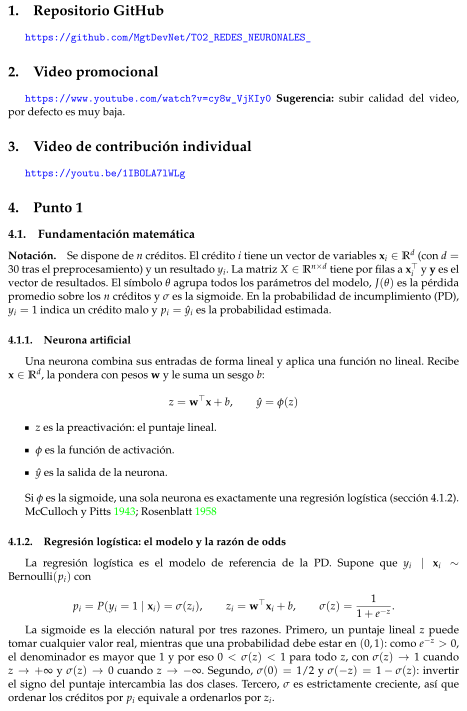
Repositorio GitHub
Video promocional
Video de contribución individual
Punto 1
Fundamentación matemática
Neurona artificial
Regresión logística: el modelo y la razón de odds
1.Repositorio GitHubhttps://github.com/MgtDevNet/T02_REDES_NEURONALES_2.Video promocionalhttps://www.youtube.com/watch?v=cy8w_VjKIy0 Sugerencia: subir calidad del video,por defecto es muy baja.3.Video de contribución individualhttps://youtu.be/1IBOLA7lWLg4.Punto 14.1.Fundamentación matemáticaNotación.Se dispone de n créditos. El crédito i tiene un vector de variables xi ∈Rd (con d =30 tras el preprocesamiento) y un resultado yi. La matriz X ∈Rn×d tiene por filas a x⊤i y y es elvector de resultados. El símbolo θ agrupa todos los parámetros del modelo, J(θ) es la pérdidapromedio sobre los n créditos y σ es la sigmoide. En la probabilidad de incumplimiento (PD),yi = 1 indica un crédito malo y pi = ˆyi es la probabilidad estimada.4.1.1.Neurona artificialUna neurona combina sus entradas de forma lineal y aplica una función no lineal. Recibex ∈Rd, la pondera con pesos w y le suma un sesgo b:z = w⊤x + b,ˆy = ϕ(z)z es la preactivación: el puntaje lineal.ϕ es la función de activación.ˆy es la salida de la neurona.Si ϕ es la sigmoide, una sola neurona es exactamente una regresión logística (sección 4.1.2).McCulloch y Pitts 1943; Rosenblatt 19584.1.2.Regresión logística: el modelo y la razón de oddsLa regresión logística es el modelo de referencia de la PD. Supone que yi|xi∼Bernoulli(pi) conpi = P(yi = 1 | xi) = σ(zi),zi = w⊤xi + b,σ(z) =11 + e−z .La sigmoide es la elección natural por tres razones. Primero, un puntaje lineal z puedetomar cualquier valor real, mientras que una probabilidad debe estar en (0, 1): como e−z > 0,el denominador es mayor que 1 y por eso 0 < σ(z) < 1 para todo z, con σ(z) →1 cuandoz →+∞y σ(z) →0 cuando z →−∞. Segundo, σ(0) = 1/2 y σ(−z) = 1 −σ(z): invertirel signo del puntaje intercambia las dos clases. Tercero, σ es estrictamente creciente, así queordenar los créditos por pi equivale a ordenarlos por zi.
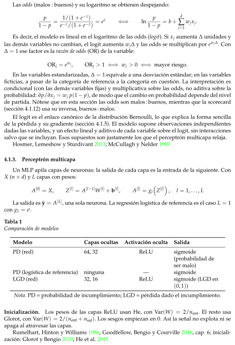
Perceptrón multicapa
Las odds (malos : buenos) y su logaritmo se obtienen despejando:p1 −p =1/(1 + e−z)e−z/(1 + e−z) = ez⇐⇒lnp1 −p = b +d∑j=1wjxj.Es decir, el modelo es lineal en el logaritmo de las odds (logit). Si xj aumenta ∆unidades ylas demás variables no cambian, el logit aumenta wj∆y las odds se multiplican por ewj∆. Con∆= 1 ese factor es la razón de odds (OR) de la variable:ORj = ewj,ORj > 1 ⇐⇒wj > 0 ⇐⇒mayor riesgo.En las variables estandarizadas, ∆= 1 equivale a una desviación estándar; en las variablesficticias, a pasar de la categoría de referencia a la categoría en cuestión. La interpretación escondicional (con las demás variables fijas) y multiplicativa sobre las odds, no aditiva sobre laprobabilidad: ∂p/∂xj = wj p(1 −p), de modo que el cambio en probabilidad depende del nivelde partida. Nótese que en esta sección las odds son malos : buenos, mientras que la scorecard(sección 4.1.12) usa su inversa, buenos : malos.El logit es el enlace canónico de la distribución Bernoulli, lo que explica la forma sencillade la pérdida y su gradiente (sección 4.1.5). El modelo supone observaciones independientesdadas las variables, y un efecto lineal y aditivo de cada variable sobre el logit, sin interaccionessalvo que se incluyan. Esos supuestos son justamente los que el perceptrón multicapa relaja.Hosmer, Lemeshow y Sturdivant 2013; McCullagh y Nelder 19894.1.3.Perceptrón multicapaUn MLP apila capas de neuronas: la salida de cada capa es la entrada de la siguiente. ConX (n × d) y L capas con pesos:A[0] = X,Z[l] = A[l−1]W[l] + b[l],A[l] = glZ[l],l = 1, . . . , LLa salida es ˆy = A[L], una sola neurona. La regresión logística de referencia es el caso L = 1con g1 = σ.Tabla 1Comparación de modelosModeloCapas ocultasActivación ocultaSalidaPD (red)64, 32ReLUsigmoide(probabilidad deser malo)PD (logística de referencia)ninguna—sigmoideLGD (red)32, 16ReLUsigmoide (LGD en(0, 1))Nota. PD = probabilidad de incumplimiento; LGD = pérdida dado el incumplimiento.Inicialización.Los pesos de las capas ReLU usan He, con Var(W) = 2/nent. El resto usaGlorot, con Var(W) = 2/(nent + nsal). Los sesgos empiezan en 0. Así la señal no explota ni seapaga al atravesar las capas.Rumelhart, Hinton y Williams 1986, Goodfellow, Bengio y Courville 2016, cap. 6; iniciali-zación: Glorot y Bengio 2010; He et al. 2015
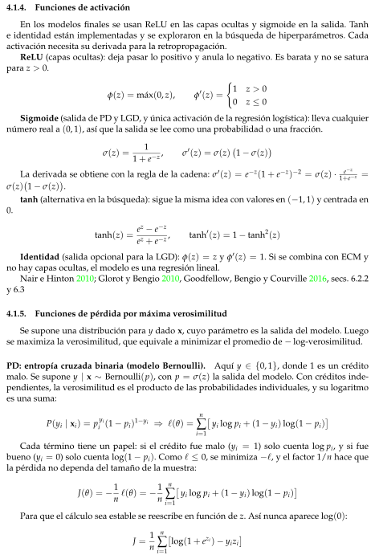
Funciones de activación
Funciones de pérdida por máxima verosimilitud
4.1.4.Funciones de activaciónEn los modelos finales se usan ReLU en las capas ocultas y sigmoide en la salida. Tanhe identidad están implementadas y se exploraron en la búsqueda de hiperparámetros. Cadaactivación necesita su derivada para la retropropagación.ReLU (capas ocultas): deja pasar lo positivo y anula lo negativo. Es barata y no se saturapara z > 0.ϕ(z) = máx(0, z),ϕ′(z) =(1z > 00z ≤0Sigmoide (salida de PD y LGD, y única activación de la regresión logística): lleva cualquiernúmero real a (0, 1), así que la salida se lee como una probabilidad o una fracción.σ(z) =11 + e−z ,σ′(z) = σ(z)�1 −σ(z)La derivada se obtiene con la regla de la cadena: σ′(z) = e−z(1 + e−z)−2 = σ(z) ·e−z1+e−z =σ(z)�1 −σ(z).tanh (alternativa en la búsqueda): sigue la misma idea con valores en (−1, 1) y centrada en0.tanh(z) = ez −e−zez + e−z ,tanh′(z) = 1 −tanh2(z)Identidad (salida opcional para la LGD): ϕ(z) = z y ϕ′(z) = 1. Si se combina con ECM yno hay capas ocultas, el modelo es una regresión lineal.Nair e Hinton 2010; Glorot y Bengio 2010, Goodfellow, Bengio y Courville 2016, secs. 6.2.2y 6.34.1.5.Funciones de pérdida por máxima verosimilitudSe supone una distribución para y dado x, cuyo parámetro es la salida del modelo. Luegose maximiza la verosimilitud, que equivale a minimizar el promedio de −log-verosimilitud.PD: entropía cruzada binaria (modelo Bernoulli).Aquí y ∈{0, 1}, donde 1 es un créditomalo. Se supone y | x ∼Bernoulli(p), con p = σ(z) la salida del modelo. Con créditos inde-pendientes, la verosimilitud es el producto de las probabilidades individuales, y su logaritmoes una suma:P(yi | xi) = p yii (1 −pi)1−yi ⇒ℓ(θ) =n∑i=1yi log pi + (1 −yi) log(1 −pi)Cada término tiene un papel: si el crédito fue malo (yi = 1) solo cuenta log pi, y si fuebueno (yi = 0) solo cuenta log(1 −pi). Como ℓ≤0, se minimiza −ℓ, y el factor 1/n hace quela pérdida no dependa del tamaño de la muestra:J(θ) = −1n ℓ(θ) = −1nn∑i=1yi log pi + (1 −yi) log(1 −pi)Para que el cálculo sea estable se reescribe en función de z. Así nunca aparece log(0):J = 1nn∑i=1log(1 + ezi) −yizi
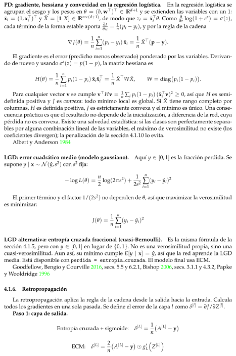
Retropropagación
PD: gradiente, hessiana y convexidad en la regresión logística.En la regresión logística seagrupan el sesgo y los pesos en θ = (b, w⊤)⊤∈Rd+1 y se extienden las variables con un 1:x̃i = (1, x⊤i )⊤y X̃ = [1 X] ∈Rn×(d+1), de modo que zi = x̃⊤i θ. Como∂∂z log(1 + ez) = σ(z),cada término de la forma estable aporta ∂J∂zi = 1n(pi −yi), y por la regla de la cadena∇J(θ) = 1nn∑i=1(pi −yi) x̃i = 1nX̃⊤(p −y).El gradiente es el error (predicho menos observado) ponderado por las variables. Derivan-do de nuevo y usando σ′(z) = p(1 −p), la matriz hessiana esH(θ) = 1nn∑i=1pi(1 −pi) x̃i x̃⊤i = 1nX̃⊤W X̃,W = diag�pi(1 −pi).Para cualquier vector v se cumple v⊤Hv = 1n ∑i pi(1 −pi) (x̃⊤i v)2 ≥0, así que H es semi-definida positiva y J es convexa: todo mínimo local es global. Si X̃ tiene rango completo porcolumnas, H es definida positiva, J es estrictamente convexa y el mínimo es único. Una conse-cuencia práctica es que el resultado no depende de la inicialización, a diferencia de la red, cuyapérdida no es convexa. Existe una salvedad estadística: si las clases son perfectamente separa-bles por alguna combinación lineal de las variables, el máximo de verosimilitud no existe (loscoeficientes divergen); la penalización de la sección 4.1.10 lo evita.Albert y Anderson 1984LGD: error cuadrático medio (modelo gaussiano).Aquí y ∈[0, 1] es la fracción perdida. Sesupone y | x ∼N ( ˆy, s2) con s2 fija:−log L(θ) = n2 log(2πs2) + 12s2n∑i=1(yi −ˆyi)2El primer término y el factor 1/(2s2) no dependen de θ, así que maximizar la verosimilitudes minimizar:J(θ) = 1nn∑i=1(yi −ˆyi)2LGD alternativa: entropía cruzada fraccional (cuasi-Bernoulli).Es la misma fórmula de lasección 4.1.5, pero con y ∈[0, 1] en lugar de {0, 1}. No es una verosimilitud propia, sino unacuasi-verosimilitud. Aun así, su mínimo cumple E[y | x] = ˆy, así que la red aprende la LGDmedia. Está disponible con perdida = entropia cruzada. El modelo final usa ECM.Goodfellow, Bengio y Courville 2016, secs. 5.5 y 6.2.1, Bishop 2006, secs. 3.1.1 y 4.3.2, Papkey Wooldridge 19964.1.6.RetropropagaciónLa retropropagación aplica la regla de la cadena desde la salida hacia la entrada. Calculatodos los gradientes en una sola pasada. Se define el error de la capa l como δ[l] = ∂J/∂Z[l].Paso 1: capa de salida.Entropía cruzada + sigmoide:δ[L] = 1n�A[L] −yECM:δ[L] = 2n�A[L] −y ⊙g′LZ[L]
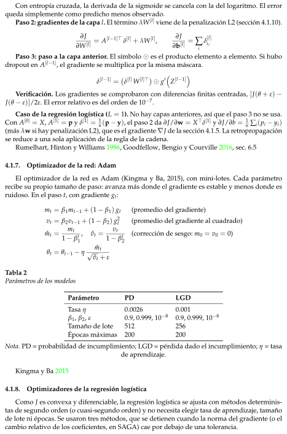
Optimizador de la red: Adam
Optimizadores de la regresión logística
Con entropía cruzada, la derivada de la sigmoide se cancela con la del logaritmo. El errorqueda simplemente como predicho menos observado.Paso 2: gradientes de la capa l. El término λW[l] viene de la penalización L2 (sección 4.1.10).∂J∂W[l] = A[l−1]⊤δ[l] + λW[l],∂J∂b[l] = ∑iδ[l]i,·Paso 3: paso a la capa anterior. El símbolo ⊙es el producto elemento a elemento. Si hubodropout en A[l−1], el gradiente se multiplica por la misma máscara.δ[l−1] =�δ[l] W[l]⊤ ⊙g′Z[l−1]Verificación. Los gradientes se comprobaron con diferencias finitas centradas, [J(θ + ε) −J(θ −ε)]/2ε. El error relativo es del orden de 10−7.Caso de la regresión logística (L = 1). No hay capas anteriores, así que el paso 3 no se usa.Con A[0] = X, A[1] = p y δ[1] = 1n(p −y), el paso 2 da ∂J/∂w = X⊤δ[1] y ∂J/∂b = 1n ∑i(pi −yi)(más λw si hay penalización L2), que es el gradiente ∇J de la sección 4.1.5. La retropropagaciónse reduce a una sola aplicación de la regla de la cadena.Rumelhart, Hinton y Williams 1986, Goodfellow, Bengio y Courville 2016, sec. 6.54.1.7.Optimizador de la red: AdamEl optimizador de la red es Adam (Kingma y Ba, 2015), con mini-lotes. Cada parámetrorecibe su propio tamaño de paso: avanza más donde el gradiente es estable y menos donde esruidoso. En el paso t, con gradiente gt:mt = β1mt−1 + (1 −β1) gt(promedio del gradiente)vt = β2vt−1 + (1 −β2) g2t(promedio del gradiente al cuadrado)ˆmt =mt1 −βt1,ˆvt =vt1 −βt2(corrección de sesgo: m0 = v0 = 0)θt = θt−1 −ηˆmt√ˆvt + εTabla 2Parámetros de los modelosParámetroPDLGDTasa η0.00260.001β1, β2, ε0.9, 0.999, 10−80.9, 0.999, 10−8Tamaño de lote512256Épocas máximas200200Nota. PD = probabilidad de incumplimiento; LGD = pérdida dado el incumplimiento; η = tasade aprendizaje.Kingma y Ba 20154.1.8.Optimizadores de la regresión logísticaComo J es convexa y diferenciable, la regresión logística se ajusta con métodos determinis-tas de segundo orden (o cuasi-segundo orden) y no necesita elegir tasa de aprendizaje, tamañode lote ni épocas. Se usaron tres métodos, que se detienen cuando la norma del gradiente (o elcambio relativo de los coeficientes, en SAGA) cae por debajo de una tolerancia.
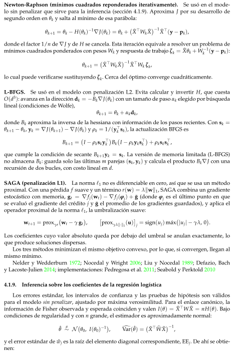
Inferencia sobre los coeficientes de la regresión logística
Newton-Raphson (mínimos cuadrados reponderados iterativamente).Se usó en el mode-lo sin penalizar que sirve para la inferencia (sección 4.1.9). Aproxima J por su desarrollo desegundo orden en θk y salta al mínimo de esa parábola:θk+1 = θk −H(θk)−1∇J(θk) = θk +� X̃⊤Wk X̃−1 X̃⊤(y −pk),donde el factor 1/n de ∇J y de H se cancela. Esta iteración equivale a resolver un problema demínimos cuadrados ponderados con pesos Wk y respuesta de trabajo ζk = X̃θk + W−1k (y −pk):θk+1 =� X̃⊤Wk X̃−1 X̃⊤Wk ζk,lo cual puede verificarse sustituyendo ζk. Cerca del óptimo converge cuadráticamente.L-BFGS.Se usó en el modelo con penalización L2. Evita calcular y invertir H, que cuestaO(d3): avanza en la dirección dk = −Bk∇J(θk) con un tamaño de paso αk elegido por búsquedalineal (condiciones de Wolfe),θk+1 = θk + αkdk,donde Bk aproxima la inversa de la hessiana con información de los pasos recientes. Con sk =θk+1 −θk, yk = ∇J(θk+1) −∇J(θk) y ρk = 1/(y⊤k sk), la actualización BFGS esBk+1 =�I −ρksky⊤kBk�I −ρkyks⊤k + ρksks⊤k ,que cumple la condición de secante Bk+1yk = sk. La versión de memoria limitada (L-BFGS)no almacena Bk: guarda solo las últimas m parejas (sk, yk) y calcula el producto Bk∇J con unarecursión de dos bucles, con costo lineal en d.SAGA (penalización L1).La norma ℓ1 no es diferenciable en cero, así que se usa un métodoproximal. Con una pérdida f suave y un término r(w) = λ∥w∥1, SAGA combina un gradienteestocástico con memoria, gt = ∇fj(wt) −∇fj(φj) + ¯g (donde φj es el último punto en quese evaluó el gradiente del crédito j y ¯g el promedio de los gradientes guardados), y aplica eloperador proximal de la norma ℓ1, la umbralización suave:wt+1 = proxγr�wt −γ gt,proxγλ∥·∥1(u)j = sign(uj) máx�|uj| −γλ, 0.Los coeficientes cuyo valor absoluto queda por debajo del umbral se anulan exactamente, loque produce soluciones dispersas.Los tres métodos minimizan el mismo objetivo convexo, por lo que, si convergen, llegan almismo mínimo.Nelder y Wedderburn 1972; Nocedal y Wright 2006; Liu y Nocedal 1989; Defazio, Bachy Lacoste-Julien 2014; implementaciones: Pedregosa et al. 2011; Seabold y Perktold 20104.1.9.Inferencia sobre los coeficientes de la regresión logísticaLos errores estándar, los intervalos de confianza y las pruebas de hipótesis son válidospara el modelo sin penalizar, ajustado por máxima verosimilitud. Para el enlace canónico, lainformación de Fisher observada y esperada coinciden y valen I(θ) = X̃⊤W X̃ = nH(θ). Bajocondiciones de regularidad y con n grande, el estimador es aproximadamente normal:ˆθa∼N�θ0, I(θ0)−1,dVar( ˆθ) =� X̃⊤bW X̃−1,y el error estándar de ˆwj es la raíz del elemento diagonal correspondiente, EEj. De ahí se obtie-nen:
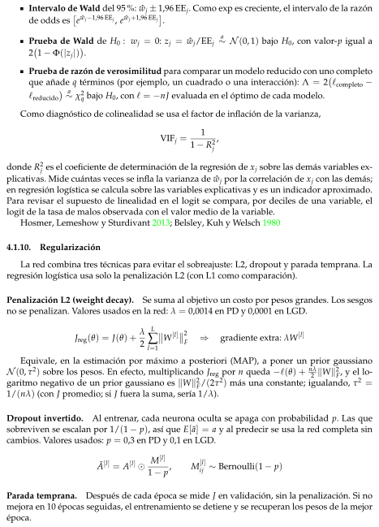
Regularización
Intervalo de Wald del 95 %: ˆwj ± 1,96 EEj. Como exp es creciente, el intervalo de la razónde odds ese ˆwj−1,96 EEj, e ˆwj+1,96 EEj.Prueba de Wald de H0 : wj = 0: zj = ˆwj/EEja∼N (0, 1) bajo H0, con valor-p igual a2�1 −Φ(|zj|).Prueba de razón de verosimilitud para comparar un modelo reducido con uno completoque añade q términos (por ejemplo, un cuadrado o una interacción): Λ = 2�ℓcompleto −ℓreducido a∼χ2q bajo H0, con ℓ= −nJ evaluada en el óptimo de cada modelo.Como diagnóstico de colinealidad se usa el factor de inflación de la varianza,VIFj =11 −R2j,donde R2j es el coeficiente de determinación de la regresión de xj sobre las demás variables ex-plicativas. Mide cuántas veces se infla la varianza de ˆwj por la correlación de xj con las demás;en regresión logística se calcula sobre las variables explicativas y es un indicador aproximado.Para revisar el supuesto de linealidad en el logit se compara, por deciles de una variable, ellogit de la tasa de malos observada con el valor medio de la variable.Hosmer, Lemeshow y Sturdivant 2013; Belsley, Kuh y Welsch 19804.1.10.RegularizaciónLa red combina tres técnicas para evitar el sobreajuste: L2, dropout y parada temprana. Laregresión logística usa solo la penalización L2 (con L1 como comparación).Penalización L2 (weight decay).Se suma al objetivo un costo por pesos grandes. Los sesgosno se penalizan. Valores usados en la red: λ = 0,0014 en PD y 0,0001 en LGD.Jreg(θ) = J(θ) + λ2L∑l=1W[l]
2F⇒gradiente extra: λW[l]Equivale, en la estimación por máximo a posteriori (MAP), a poner un prior gaussianoN (0, τ2) sobre los pesos. En efecto, multiplicando Jreg por n queda −ℓ(θ) + nλ2 ∥W∥2F, y el lo-garitmo negativo de un prior gaussiano es ∥W∥2F/(2τ2) más una constante; igualando, τ2 =1/(nλ) (con J promedio; si J fuera la suma, sería 1/λ).Dropout invertido.Al entrenar, cada neurona oculta se apaga con probabilidad p. Las quesobreviven se escalan por 1/(1 −p), así que E[ã] = a y al predecir se usa la red completa sincambios. Valores usados: p = 0,3 en PD y 0,1 en LGD.Ã[l] = A[l] ⊙M[l]1 −p,M[l]ij ∼Bernoulli(1 −p)Parada temprana.Después de cada época se mide J en validación, sin la penalización. Si nomejora en 10 épocas seguidas, el entrenamiento se detiene y se recuperan los pesos de la mejorépoca.
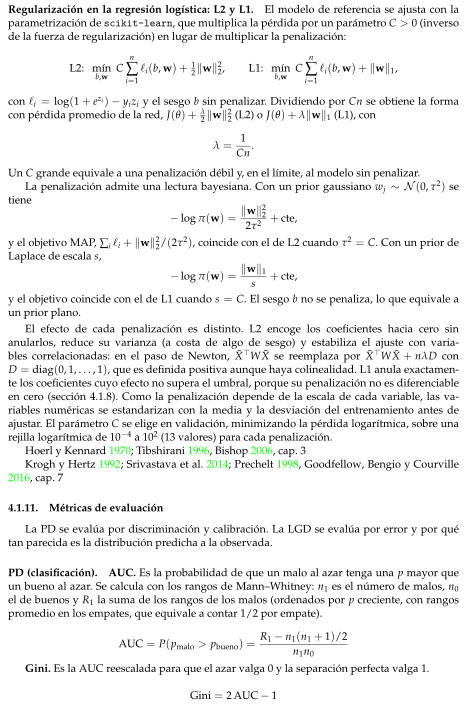
Métricas de evaluación
Regularización en la regresión logística: L2 y L1.El modelo de referencia se ajusta con laparametrización de scikit-learn, que multiplica la pérdida por un parámetro C > 0 (inversode la fuerza de regularización) en lugar de multiplicar la penalización:L2: mínb,w Cn∑i=1ℓi(b, w) + 12∥w∥22,L1: mínb,w Cn∑i=1ℓi(b, w) + ∥w∥1,con ℓi = log(1 + ezi) −yizi y el sesgo b sin penalizar. Dividiendo por Cn se obtiene la formacon pérdida promedio de la red, J(θ) + λ2 ∥w∥22 (L2) o J(θ) + λ∥w∥1 (L1), conλ = 1Cn.Un C grande equivale a una penalización débil y, en el límite, al modelo sin penalizar.La penalización admite una lectura bayesiana. Con un prior gaussiano wj ∼N (0, τ2) setiene−log π(w) = ∥w∥222τ2 + cte,y el objetivo MAP, ∑i ℓi + ∥w∥22/(2τ2), coincide con el de L2 cuando τ2 = C. Con un prior deLaplace de escala s,−log π(w) = ∥w∥1s+ cte,y el objetivo coincide con el de L1 cuando s = C. El sesgo b no se penaliza, lo que equivale aun prior plano.El efecto de cada penalización es distinto. L2 encoge los coeficientes hacia cero sinanularlos, reduce su varianza (a costa de algo de sesgo) y estabiliza el ajuste con varia-bles correlacionadas: en el paso de Newton, X̃⊤W X̃ se reemplaza por X̃⊤W X̃ + nλD conD = diag(0, 1, . . . , 1), que es definida positiva aunque haya colinealidad. L1 anula exactamen-te los coeficientes cuyo efecto no supera el umbral, porque su penalización no es diferenciableen cero (sección 4.1.8). Como la penalización depende de la escala de cada variable, las va-riables numéricas se estandarizan con la media y la desviación del entrenamiento antes deajustar. El parámetro C se elige en validación, minimizando la pérdida logarítmica, sobre unarejilla logarítmica de 10−4 a 102 (13 valores) para cada penalización.Hoerl y Kennard 1970; Tibshirani 1996, Bishop 2006, cap. 3Krogh y Hertz 1992; Srivastava et al. 2014; Prechelt 1998, Goodfellow, Bengio y Courville2016, cap. 74.1.11.Métricas de evaluaciónLa PD se evalúa por discriminación y calibración. La LGD se evalúa por error y por quétan parecida es la distribución predicha a la observada.PD (clasificación).AUC. Es la probabilidad de que un malo al azar tenga una p mayor queun bueno al azar. Se calcula con los rangos de Mann–Whitney: n1 es el número de malos, n0el de buenos y R1 la suma de los rangos de los malos (ordenados por p creciente, con rangospromedio en los empates, que equivale a contar 1/2 por empate).AUC = P(pmalo > pbueno) = R1 −n1(n1 + 1)/2n1n0Gini. Es la AUC reescalada para que el azar valga 0 y la separación perfecta valga 1.Gini = 2 AUC −1
KS. Es la máxima separación entre las distribuciones acumuladas de p para malos y parabuenos. Equivale a la máxima diferencia entre la tasa de verdaderos positivos y la de falsospositivos.KS = máxtFmalos(t) −Fbuenos(t)= máxtTPR(t) −FPR(t)Brier. Es el error cuadrático de la probabilidad. Mide calibración y discriminación a la vez.Brier = 1nn∑i=1(pi −yi)2Brier de referencia y Brier skill score. Como el Brier depende de la tasa de malos, se com-para con el de un predictor constante igual a la tasa de malos del entrenamiento, ¯πent. Si π esla tasa observada en la muestra evaluada,Brierref = 1nn∑i=1� ¯πent −yi2 = π(1 −π) +� ¯πent −π2,BSS = 1 −BrierBrierref.La igualdad se obtiene desarrollando el cuadrado con 1n ∑yi = π y y2i = yi. El BSS vale 0 si elmodelo no mejora al predictor constante y 1 si es perfecto.Entropía cruzada. Es la misma pérdida de la sección 4.1.5 medida en test: el promedio de−log-verosimilitud.Curva de calibración. Se ordenan los créditos en 10 grupos por p. En cada grupo se com-para la p promedio con la tasa de malos observada. Si el modelo está bien calibrado, los puntosquedan sobre la diagonal.Intervalo de Wilson para cada grupo. Para un grupo con m créditos y k malos, con ˆq = k/my z = 1,96, la tasa observada se acompaña del intervaloˆq + z22m1 + z2m±z1 + z2mrˆq(1 −ˆq)m+ z24m2 ,que, a diferencia del intervalo normal, se mantiene dentro de [0, 1] y es fiable con proporcionespequeñas.Pendiente e intercepto de calibración. Con ˆzi = lnˆpi1−ˆpi , se ajusta por máxima verosimili-tud en la muestra evaluada el modelo logísticoln P(yi = 1)P(yi = 0) = a + c ˆzi.Una calibración perfecta corresponde a a = 0 y c = 1. Una pendiente c < 1 indica probabilida-des demasiado extremas (típica del sobreajuste) y c > 1, demasiado moderadas. Como medidadel nivel medio se estima el desplazamiento a∗con la pendiente fija en 1, es decir, el valor que re-suelve ∑iyi −σ(a∗+ ˆzi) = 0 (la ecuación de verosimilitud del intercepto con ˆzi como términofijo). Con ese desplazamiento, la probabilidad media predicha iguala la tasa observada; a∗> 0indica que el modelo subestima el riesgo en promedio. El mismo desplazamiento, estimado envalidación, permite recalibrar las probabilidades de prueba.Intervalos bootstrap. Para cuantificar la incertidumbre de una métrica m se remuestreanB = 1000 veces los n créditos con reemplazo, se recalcula la métrica en cada remuestra,m∗(1), . . . , m∗(B), y se toma el intervalo entre los percentiles 2.5 y 97.5 de esos valores. Así secomparan dos modelos sin suponer una distribución para el estadístico.
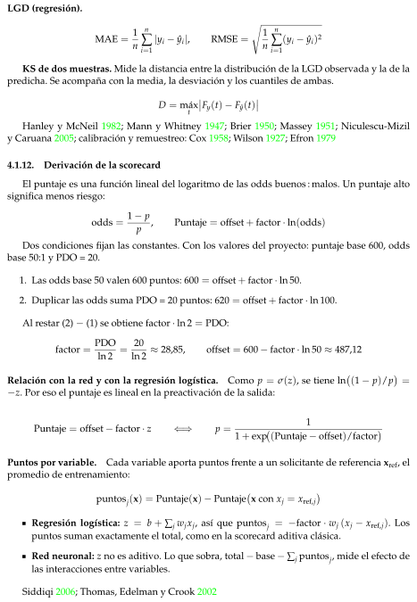
Derivación de la scorecard
LGD (regresión).MAE = 1nn∑i=1|yi −ˆyi|,RMSE =s1nn∑i=1(yi −ˆyi)2KS de dos muestras. Mide la distancia entre la distribución de la LGD observada y la de lapredicha. Se acompaña con la media, la desviación y los cuantiles de ambas.D = máxtFy(t) −Fˆy(t)Hanley y McNeil 1982; Mann y Whitney 1947; Brier 1950; Massey 1951; Niculescu-Mizily Caruana 2005; calibración y remuestreo: Cox 1958; Wilson 1927; Efron 19794.1.12.Derivación de la scorecardEl puntaje es una función lineal del logaritmo de las odds buenos : malos. Un puntaje altosignifica menos riesgo:odds = 1 −pp,Puntaje = offset + factor · ln(odds)Dos condiciones fijan las constantes. Con los valores del proyecto: puntaje base 600, oddsbase 50:1 y PDO = 20.1. Las odds base 50 valen 600 puntos: 600 = offset + factor · ln 50.2. Duplicar las odds suma PDO = 20 puntos: 620 = offset + factor · ln 100.Al restar (2) −(1) se obtiene factor · ln 2 = PDO:factor = PDOln 2 = 20ln 2 ≈28,85,offset = 600 −factor · ln 50 ≈487,12Relación con la red y con la regresión logística.Como p = σ(z), se tiene ln�(1 −p)/p =−z. Por eso el puntaje es lineal en la preactivación de la salida:Puntaje = offset −factor · z⇐⇒p =11 + exp�(Puntaje −offset)/factorPuntos por variable.Cada variable aporta puntos frente a un solicitante de referencia xref, elpromedio de entrenamiento:puntosj(x) = Puntaje(x) −Puntaje�x con xj = xref,jRegresión logística: z = b + ∑j wjxj, así que puntosj = −factor · wj (xj −xref,j). Lospuntos suman exactamente el total, como en la scorecard aditiva clásica.Red neuronal: z no es aditivo. Lo que sobra, total −base −∑j puntosj, mide el efecto delas interacciones entre variables.Siddiqi 2006; Thomas, Edelman y Crook 2002
Caso de uso
Preprocesamiento de datos
4.2.Caso de usoEl modelo está pensado para que lo use una entidad que otorga créditos a 36 meses. Esti-ma, para cada solicitante, la probabilidad de que su crédito resulte malo, es decir, que termineen incumplimiento en lugar de pagarse por completo. Con esa probabilidad, la entidad de-cide si aprueba o rechaza la solicitud: el modelo no decide por sí solo, sino que entrega unaprobabilidad que la entidad compara con el umbral definido por su política de riesgo.El modelo se aplica en el momento de la solicitud, una vez que el cliente ha entregado susdatos y la entidad ha consultado su reporte en el buró de crédito, y antes del desembolso. Ladecisión se toma una sola vez, con lo que se conoce ese día. Por eso el modelo solo utilizainformación disponible en ese instante: los datos que el cliente declara y las variables de suhistorial crediticio.Información disponible en ese instante: Los datos de la solicitud son el monto del créditosolicitado por el cliente, su antigüedad laboral en años, su situación de vivienda, su ingresoanual declarado y el propósito del crédito. Las variables del historial en el buró de crédito sonla relación entre sus pagos mensuales de deuda y su ingreso mensual, el número de moras de30 días o más en los últimos dos años, el mes de apertura de su línea de crédito más antigua,el número de consultas de crédito en los últimos seis meses, los meses transcurridos desde suúltima mora, el número de líneas de crédito abiertas, el número de registros públicos negativos,el saldo del crédito rotativo, el porcentaje utilizado de ese crédito rotativo y el número total delíneas de crédito en su historial.4.3.Preprocesamiento de datosValores nulos y ceros contradictoriosAntes de definir el preprocesamiento, se revisó en qué variables y en qué momentos faltandatos, y si algunos ceros corresponden a valores reales o a códigos que reemplazan un dato au-sente. Las revisiones sobre la codificación a lo largo del tiempo se hicieron con la base completa(todos los plazos y años), porque solo así es posible detectar cambios entre años; las revisionesque sustentan imputaciones o recodificaciones se hicieron con el conjunto de entrenamiento.Nulos por año de originaciónLa Tabla 3 muestra, para las variables con algún valor ausente, la proporción de nulos poraño de originación. Se identificaron cuatro patrones.Tabla 3Porcentaje de valores nulos por año de originaciónVariable200720082009201020112012201320142015Historial crediticioa4,80,00,00,00,00,00,00,00,0annual inc0,70,00,00,00,00,00,00,00,0emp length0,00,00,02,83,53,64,45,15,7revol util5,30,50,30,20,00,10,10,10,0mths since last delinq6,538,167,064,366,258,856,549,248,41. Historial crediticio. Seis variables (delinq 2yrs, earliest cr line, inq last 6mths,open acc, pub rec y total acc) tienen nulos únicamente en 2007, con la mismaproporción (4,8 %). Esa proporción equivale a unos 29 de los 603 créditos originados eseaño, que es la misma cantidad que se elimina del conjunto de entrenamiento. Esconsistente con que se trate de solicitantes sin historial crediticio, a quienes les faltantodas estas variables a la vez.
2. Antigüedad laboral. emp length no tiene nulos de 2007 a 2009, y desde 2010 su propor-ción de nulos crece cada año, de 2,8 %a 5,7 %en 2015. Es decir, la ausencia de este datodepende de la fecha de originación.3. Ingreso anual. annual inc tiene nulos solo en 2007 (0,7 %); en entrenamiento son 4 crédi-tos.4. Meses desde la última mora. La proporción de nulos de mths since last delinq cam-bia de forma abrupta: 6,5 %en 2007, 38,1 %en 2008 y alrededor de 60 %a partir de 2009.Un cambio de esta magnitud no se explica por el comportamiento de los clientes, sinopor la forma de codificar los datos, como se muestra más adelante.mths since last delinq: el significado del nulo y del ceroEl nulo equivale a “sin mora registrada”. La Tabla 4 cruza la existencia de una mora en losúltimos dos años (delinq 2yrs) con la presencia de un valor en mths since last delinq, enel conjunto de entrenamiento. Los 3.508 créditos con alguna mora reciente tienen siempre unvalor, es decir, ninguno tiene nulo. Entre los 27.997 créditos sin mora reciente, 19.717 (70,4 %)tienen nulo y 8.280 (29,6 %) tienen un valor, que corresponde a una mora anterior a los dosúltimos años. Por tanto, el nulo aparece solo cuando no hay mora reciente, y se interpretacomo ausencia de mora registrada.Tabla 4Presencia del historial de moras recientesmths since last delinq nuloCon valorTotaldelinq 2yrs = 019.717 (70,4 %)8.280 (29,6 %)27.997delinq 2yrs > 00 (0,0 %)3.508 (100,0 %)3.508Nota. Muestra de entrenamiento (n = 31,505).El cero es un código en los primeros años. Un valor de cero meses desde la última moraimplicaría una mora reciente y, por tanto, delinq 2yrs ≥1. La Tabla 5 muestra, con la basecompleta, que de los 1.723 créditos con cero, 821 (47,6 %) tienen delinq 2yrs = 0, lo cual escontradictorio. Además, estos ceros no están repartidos en el tiempo: representan el 60,1 %delos créditos de 2007 y el 19,8 %de los de 2008, y son prácticamente nulos desde 2009 (Tabla 6).En entrenamiento hay 821 ceros, de los cuales solo 1 tiene delinq 2yrs > 0; es decir, 820 soncontradictorios.Tabla 5Moras recientes según meses desde la última moradelinq 2yrs = 0delinq 2yrs > 0mths since last delinq = 0821902mths since last delinq̸ = 0 o nulo716.140169.487Nota. Base completa; créditos con historial (n = 887,350).Los nulos y los ceros se compensan. La Tabla 6 suma, año por año, la proporción de nulosy la de ceros. Mientras los nulos por sí solos varían entre 6,5 %y 67,0 %, su suma oscila entre57,9 %y 67,0 %de 2007 a 2012. Esto indica que en los primeros años la ausencia de mora seregistraba con un cero y que, a partir de 2009, se registra con un nulo. Fuera de ese periodo, lasuma baja a 48,5 %–56,6 %en 2013–2015, años que no forman parte de la población de estudio.
Tabla 6Porcentaje de valores nulos y ceros por año de originaciónAñoNuloIgual a 0Nulo o igual a 020076,560,166,6200838,119,857,9200967,00,067,0201064,30,064,3201166,20,066,2201258,80,058,8201356,50,156,6201449,20,149,3201548,40,148,5Nota. Base completa. Los valores se expresan en porcentajes. El porcentaje de nulos se calcula sobretodos los créditos del año y el de ceros sobre los créditos con historial; por ello, la suma de 2007 esaproximada.Implicación. Un cero en mths since last delinq con delinq 2yrs = 0 no es un tiemporeal, sino el código de “sin mora”. Si no se corrigiera, la variable mezclaría dos significadosdistintos bajo el mismo valor.mths since last record: el cero como códigoCon el mismo razonamiento, un cero en mths since last record significaría un registropúblico ocurrido el mismo mes de la originación, por lo que se esperaría pub rec ≥1. LaTabla 7 muestra lo contrario en entrenamiento. Los 1.275 créditos con cero tienen todos pub rec= 0, y los 1.728 con un valor positivo tienen todos pub rec ≥1; no hay ningún caso fuera deesas dos combinaciones. El cero es, por tanto, un código de “sin registro público”.Tabla 7Presencia de registros públicos según meses desde el último registropub rec = 0pub rec > 0mths since last record = 01.2750mths since last record > 001.728Nota. Muestra de entrenamiento, limitada a créditos con valor en mths since last record (n = 3,003).Al igual que en la variable anterior, este código solo aparece en los primeros años. En todala base, los créditos con valor en mths since last record y pub rec = 0 son 1.275 (Tabla 8):524 de 2007, 748 de 2008 y 3 de 2009, ninguno posterior. Como su número coincide con el deentrenamiento, son exactamente los mismos créditos.Tabla 8Créditos con valor en meses desde el último registro y cero registros públicos, por añoAñoCréditos2007524200874820093Total1.275Nota. Base completa.Implicación. Como el cero es un código propio de 2007–2009 y como, además, la existencia
de registros públicos ya está recogida por pub rec, la variable no aporta información adicionaly su codificación cambia con el tiempo.revol util:nulos y rangoEn el conjunto de entrenamiento sin procesar, revol util tiene 86 valores nulos. Los 29créditos sin historial crediticio, que se excluyen del análisis, tienen todos revol util nulo;ellos explican 4,8 de los 5,3 puntos porcentuales de nulos que presenta 2007 en la Tabla 3. Los57 nulos restantes corresponden a créditos con historial y son los que efectivamente requierentratamiento. De ellos, 55 (96,5 %) tienen saldo rotativo revol bal igual a cero, de modo que nohay crédito rotativo sobre el cual calcular la utilización; los 2 restantes tienen saldo positivo, yuno de ellos (290.291) concentra la mayor parte del saldo de este grupo.Implicación. Los nulos de revol util no tienen un único significado. Cuando el saldo ro-tativo es cero, la utilización no está definida porque no hay crédito rotativo. Cuando el saldoes positivo, la utilización existe pero no se observa, y entre las variables seleccionadas no sedispone del límite de crédito para reconstruirla. Por eso los dos casos requieren un tratamientodistinto.Rango de dti y revol utilLa Tabla 9 resume la distribución de ambas variables. En entrenamiento, el mínimo de dties 0, por lo que no hay valores negativos, y su máximo es 29,99. revol util tiene un mínimode 0 (al menos el 1 %de los créditos tiene utilización nula) y un máximo de 119, que supera el100 %pero es posible cuando el saldo excede el límite de crédito.Validación y prueba muestran un desplazamiento hacia mayor endeudamiento. La mediade dti pasa de 13,07 en entrenamiento a 14,85 en validación y 17,25 en prueba, y sus máximos(34,92 y 34,99) superan el máximo observado en entrenamiento. La mediana de revol utilsube de 48,1 a 60,8 y 59,9. Esta comparación es solo una verificación: no se tomó ningunadecisión de limpieza a partir de validación ni de prueba.Tabla 9Estadísticos de endeudamiento y utilización de crédito por particiónVariableParticiónnMediaMedianaP99P99,9Mín.Máx.dtiEntrenamiento31.53413,0713,1026,7029,470,0029,99dtiValidación14.96714,8514,9029,8334,000,0034,92dtiPrueba28.45817,2516,9433,8834,880,0034,99revol utilEntrenamiento31.44848,0348,1098,7099,900,00119,00revol utilValidación14.94756,6860,8096,7099,100,0099,90revol utilPrueba28.43757,6359,9096,4098,060,00104,40Nota. Estadísticos calculados con los datos sin procesar. P99 y P99,9 corresponden a los percentiles 99 y99,9, respectivamente.El preprocesamiento transforma los datos originales en la matriz de diseño que utilizan losmodelos. Se guió por tres principios. Primero, se separaron las reglas fijas, que no dependen delos datos y producen el mismo resultado en cualquier partición, de los parámetros aprendidos(medianas, percentiles, medias, desviaciones estándar y categorías), que se estimaron única-mente con el conjunto de entrenamiento y luego se aplicaron sin modificación a validación yprueba. Si estos estadísticos se calcularan con toda la base, la información de validación y prue-ba intervendría en la construcción de las variables (fuga de datos) y el desempeño estimadosería optimista; además, como la partición es temporal, usar parámetros de periodos posterio-res equivaldría a usar información del futuro. Con el procedimiento adoptado, el modelo seevalúa en las mismas condiciones en que operaría con un solicitante nuevo, para el cual soloexisten parámetros estimados con datos pasados. Segundo, cada decisión se sustentó en evi-dencia empírica obtenida en los hallazgos anteriores. Tercero, el mismo conjunto de variables
Población y variables descartadas
Recodificación y construcción de variables
alimenta el modelo logístico y la red neuronal, de modo que las diferencias de desempeño sedeban al modelo y no a los datos de entrada.La Tabla 10 resume el tratamiento de cada variable y su tipo.Tabla 10Tratamiento de cada variable y tipo de operaciónVariableTratamientoTipotermEliminada (constante: 36 meses)Regla fijamths since last recordEliminada (cero-código; redundante con pub rec)Regla fijaSeis variables de historialaExclusión de créditos sin historialRegla fijaloan amntEstandarizaciónParámetrosaprendidosemp length“< 1 año” →0, “10+” →10, “n/a” →nulo;indicadora emp length na; mediana; estandarizaciónFija y aprendidahome ownershipNONE y ANY →OTHER; indicadoras con categoríabase la más frecuenteFija y aprendidaannual incMediana para nulos; tope en el percentil 99;log(1 + x); estandarizaciónAprendidapurposeCategorías con menos de 1 %→“raras”; indicadorascon categoría base la más frecuenteAprendidadtiEstandarizaciónAprendidadelinq 2yrs, inq last 6mths, open acc, total accTope en el percentil 99; estandarizaciónAprendidaearliest cr lineSe convierte en antig credito meses (meses); topeen el percentil 99; estandarizaciónFija y aprendidamths since last delinqCero con delinq 2yrs = 0 →nulo; indicadoranunca mora; mediana para nulos; estandarizaciónFija y aprendidapub recTope en 2 (categorías 0, 1 y 2 o más); estandarizaciónFija y aprendidarevol balTope en el percentil 99; log(1 + x); estandarizaciónAprendidarevol utilNulo con revol bal = 0 →0; nulo con revol bal> 0 →mediana; estandarizaciónFija y aprendidaNota. a delinq 2yrs, inq last 6mths, pub rec, open acc, total acc y earliest cr line.4.3.1.Población y variables descartadasCréditos sin historial crediticio.Cómo: Se excluyeron los solicitantes a quienes les faltaba alguna de las seis variables dehistorial; en entrenamiento fueron 29 créditos (0,09 %de 31.534). Justificación estadística: Estasvariables faltan todas a la vez y la causa del dato ausente es la propia condición de no tenerhistorial. Imputarlas con medianas fabricaría un historial crediticio que no existe y asignaría alsolicitante el perfil de un cliente promedio, que no representa a esa población.term.Cómo: Se eliminó.Justificación estadística: Tras restringir la población a créditos a 36 meses, la variable esconstante. Una columna no aporta información.mths since last record.Cómo: Se eliminó.Justificación estadística: Los hallazgos muestran que el cero es un código de “sin registro”y no un tiempo (Tabla 7): los 1.275 créditos con cero tienen todos pub rec = 0 y los 1.728 convalor positivo tienen todos pub rec ≥1. Además, ese código solo aparece entre 2007 y 2009(Tabla 8). La variable presenta, por tanto, un error de medición dependiente del tiempo, y sucontenido informativo sobre la existencia de registros públicos ya está en pub rec.4.3.2.Recodificación y construcción de variablesmths since last delinq e indicadora nunca mora.Cómo: Los ceros con delinq 2yrs = 0 se recodificaron como dato ausente, y se creó laindicadora nunca mora, que vale 1 cuando no hay mora registrada.
Tratamiento de valores ausentes
Justificación estadística: Los hallazgos (Tablas 4, 5 y 6) muestran que el cero es contradic-torio con delinq 2yrs = 0 y que se concentra en 2007 y 2008, mientras que la suma de nulosy ceros se mantiene estable entre años. Dejar esos ceros como valores reales los situaría en elextremo inferior de la escala, es decir, como “mora reciente”, siendo en realidad clientes sinmora. Esto produce un error de clasificación en la covariable, con dos consecuencias: puntosde alto apalancamiento en un extremo de la variable y un coeficiente sesgado, que mezcla elefecto de la mora reciente con el del periodo, los años en que se usó el código. En el conjuntosin filtrar, las tasas de malos de 2007 y 2008 (26,2 %y 20,7 %) superan a la de 2009 (13,7 %), demodo que el riesgo de confusión con el periodo no es menor. Tras la recodificación, nunca moraresulta estable en el tiempo (entre 58 %y 67 %según el año), lo que respalda la regla.Para qué: Que mths since last delinq mida únicamente tiempo transcurrido entre quie-nes tuvieron mora, y que la ausencia de mora quede representada por una variable propia yestable.emp length.Cómo: “< 1 año” se codificó 0, “10+ años” se codificó 10 y “n/a” se trató como dato ausen-te, con la indicadora emp length na.Justificación estadística: La variable es ordinal con once niveles; se trató como numérica,lo que supone un efecto aproximadamente lineal sobre el logit y ahorra diez parámetros frentea una codificación categórica, una ventaja importante para la estabilidad de las estimaciones.El valor 10 representa “diez o más”, por lo que la variable está censurada por la derecha; seacepta esa pérdida de información. La ausencia no es ajena al tiempo: es nula hasta 2009 y crecedesde 2010 (Tabla 3), de modo que es informativa y no puede asumirse aleatoria. Por eso seconserva con una indicadora. Para qué: Reducir dimensionalidad y conservar la informaciónde la ausencia.antig credito meses.Cómo: Se calculó a = 12(añoorig −añocr) + (mesorig −mescr), la diferencia en meses entrela fecha de originación y la apertura de la primera línea de crédito. Se verificó que ningún valorfuera negativo.Justificación estadística: Una fecha no tiene interpretación como predictor: su represen-tación numérica es arbitraria y dependería del calendario, no del solicitante. La duración delhistorial es, en cambio, una medida de experiencia crediticia, continua e interpretable. Se cal-culó respecto de la fecha de originación y no de la del análisis, de modo que representa lainformación disponible en el momento de la decisión y es consistente entre particiones. Paraqué: Obtener una variable con significado económico que no incorpore la fecha de corte.home ownership. Cómo: Las categorías NONE y ANY se agruparon con OTHER. Justifi-cación estadística: El diccionario solo documenta RENT, OWN, MORTGAGE y OTHER; lasdemás son niveles raros. Con pocas observaciones, y con aún menos malos.4.3.3.Tratamiento de valores ausentesrevol util. Cómo: Si el valor falta y el saldo rotativo es cero, se fijó en 0; si falta y el saldo espositivo, se imputó con la mediana de entrenamiento. Justificación estadística: Los dos casosson distintos. Entre los 57 nulos de créditos con historial, 55 (96,5 %) tienen saldo cero; paraellos la utilización, cociente entre saldo y límite, no existe porque no hay crédito rotativo, y 0es el valor coherente con la definición. Los 2 restantes sí tienen utilización, pero no se observa,y entre las variables seleccionadas no se dispone del límite para reconstruirla; allí se trata comodato ausente al azar y se imputa con la mediana, que es robusta frente a la asimetría y a valoresextremos, a diferencia de la media. Con 2 casos, el efecto sobre la varianza o la asociación esdespreciable. Para qué: Completar la variable sin introducir valores artificiales en la mayoría
Valores extremos
Transformaciones
de los casos.annual inc. Cómo: Los nulos (4 créditos en entrenamiento) se imputaron con la medianade entrenamiento. Justificación estadística: La mediana es robusta a la fuerte asimetría delingreso.Método del indicador de ausencia (mths since last delinq y emp length).Cómo: Los nulos se reemplazaron por la mediana de entrenamiento y se añadió una indi-cadora z que vale 1 cuando el dato falta.Justificación estadística: Sea x∗= x si z = 0 y x∗= c (la mediana) si z = 1. El modelologit P(y = 1) = β0 + β1x∗+ β2z + · · ·se comporta así: para z = 0 la pendiente de x es β1, estimada solo con los casos observados;para z = 1 el nivel del logit es β0 + β2 + β1c, de modo que β2 recoge la diferencia de riesgoentre el grupo sin dato y el grupo observado evaluado en x = c. La imputación solo coloca unvalor neutro para que la fila pueda usarse, y la información de la ausencia queda en β2. Sin laindicadora, el grupo sin dato quedaría forzado a seguir la misma recta que los observados, loque sesgaría β1 hacia cero.4.3.4.Valores extremosTopes en el percentil 99. Cómo: A delinq 2yrs, inq last 6mths, open acc, total acc,antig credito meses, annual inc y revol bal se les aplicó x∗= mín(x, ˆq0,99), con ˆq0,99 elpercentil 99 de entrenamiento. El mismo valor se aplicó a validación y prueba. Justificaciónestadística: Estas variables son conteos o montos con cola derecha pesada. En la regresiónlogística, la influencia de una observación sobre la estimación por máxima verosimilitud crececon su apalancamiento, y el estimador no es robusto frente a valores extremos de las covaria-bles. Truncar la cola (winsorización) acota esa influencia modificando solo cerca del 1 %de lasobservaciones, con poco sesgo. Se truncó únicamente por arriba porque todas tienen un límiteinferior natural en 0. No se truncaron dti, revol util ni emp length porque tienen rangosacotados y no presentan colas extremas: en entrenamiento, el percentil 99,9 de dti (29,47) escasi igual a su máximo (29,99) (Tabla 9). Para qué. Que pocos créditos atípicos no determinenlos coeficientes.pub rec. Cómo: Se truncó en 2 (categorías 0, 1 y 2 o más). Justificación estadística: Losvalores altos son muy raros y, con pocos malos entre ellos, no permiten distinguir un efectodistinto entre 3, 4 o más registros. El corte es una regla fija, con base en el significado sustantivode la variable. Para qué. Evitar que unos pocos casos extremos dominen la estimación.4.3.5.TransformacionesLogaritmo de annual inc y revol bal. Cómo: Se aplicó log(1 + x) después del tope. Jus-tificación estadística: Ingreso y saldo son positivos y asimétricos hacia la derecha. En el logitse supone que el efecto de una covariable es lineal. En escala natural, un aumento de 1.000dólares significaría lo mismo para un ingreso de 20.000 que para uno de 200.000, lo que no esrazonable. En escala logarítmica, un cambio de una unidad equivale a un cambio proporcional,que es la forma natural de medir diferencias entre ingresos. Además, el logaritmo estabiliza lavarianza y reduce el peso de los valores grandes. Se usó 1 + x porque el saldo rotativo toma elvalor 0, para el cual el logaritmo no está definido. Para qué. Acercar la relación con el logit auna forma lineal y mejorar la estabilidad numérica.
Variables categóricas
Estandarización
Verificaciones
Análisis descriptivo
Asociación entre las variables y el incumplimiento
4.3.6.Variables categóricaspurpose y home ownership. Cómo: Las categorías de purpose con frecuencia menor al1 %en entrenamiento se agruparon como “raras”. Cada variable se codificó con indicadoras,omitiendo la categoría más frecuente como base. Las categorías no vistas en entrenamiento seasignan a “raras” (purpose) u OTHER (home ownership).4.3.7.EstandarizaciónCómo: Las variables numéricas se transformaron como zij = (xij −ˆµj)/ˆσj, con la mediay la desviación estándar de entrenamiento. Las indicadoras y las categóricas no se escalaron.Justificación estadística: Primero, la regresión logística se ajustó con penalización L2 (y L1 paracomparar), que castiga la magnitud de los coeficientes y, por tanto, depende de la escala: unavariable medida en dólares tendría coeficientes pequeños y casi no se penalizaría, mientrasque una en escala 0–10 se penalizaría mucho más. Estandarizar pone todas las variables enigual condición frente a la penalización. Para qué: Que la regularización trate a las variablespor igual y que los modelos converjan de forma estable.4.3.8.VerificacionesSe comprobó que los créditos de las tres particiones fueran todos a 36 meses, que la an-tigüedad crediticia no fuera negativa, que la proporción de nunca mora fuera estable entreaños, que no quedaran valores nulos, que las tres matrices tuvieran las mismas columnas yel mismo número de filas que su variable objetivo, y que las variables estandarizadas tuvie-ran media 0 y desviación 1 en entrenamiento. No se encontraron columnas constantes. Tras elpreprocesamiento, las matrices tienen 31.505, 14.967 y 28.458 filas (entrenamiento, validacióny prueba), con 30 variables explicativas y tasas de clientes malos de 12,29 %, 13,78 %y 13,61 %.Los parámetros, el escalador y las matrices se guardaron para reproducir el análisis.4.4.Análisis descriptivoEl análisis descriptivo se realizó con el conjunto de entrenamiento ya preprocesado (31.505créditos, de los cuales 3.873 son malos, es decir, el 12,29 %). Primero se examinan las asocia-ciones entre variables, luego la distribución de las principales variables numéricas y discretassegún la condición de incumplimiento, y finalmente la relación conjunta entre la carga de deu-da y la utilización del crédito rotativo.4.4.1.Asociación entre las variables y el incumplimientoLa Figura 1 presenta las correlaciones de Spearman entre las variables numéricas y el indi-cador de incumplimiento. Se utilizó la correlación de rangos y no la de Pearson porque variasvariables son asimétricas o son conteos con muchos empates, y porque la respuesta es binaria.
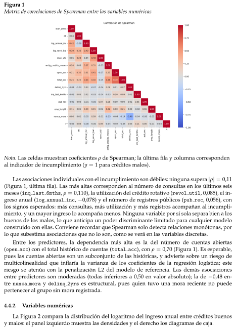
Variables numéricas
Figura 1Matriz de correlaciones de Spearman entre las variables numéricasNota. Las celdas muestran coeficientes ρ de Spearman; la última fila y columna correspondenal indicador de incumplimiento (y = 1 para créditos malos).Las asociaciones individuales con el incumplimiento son débiles: ninguna supera |ρ| = 0,11(Figura 1, última fila). Las más altas corresponden al número de consultas en los últimos seismeses (inq last 6mths, ρ = 0,110), la utilización del crédito rotativo (revol util, 0,085), el in-greso anual (log annual inc, −0,078) y el número de registros públicos (pub rec, 0,056), conlos signos esperados: más consultas, más utilización y más registros acompañan al incumpli-miento, y un mayor ingreso lo acompaña menos. Ninguna variable por sí sola separa bien a losbuenos de los malos, lo que anticipa un poder discriminante limitado para cualquier modeloconstruido con ellas. Conviene recordar que Spearman solo detecta relaciones monótonas, porlo que subestima asociaciones que no lo son, como se verá en las variables discretas.Entre los predictores, la dependencia más alta es la del número de cuentas abiertas(open acc) con el total histórico de cuentas (total acc), con ρ = 0,70 (Figura 1). Es esperable,pues las cuentas abiertas son un subconjunto de las históricas, y advierte sobre un riesgo demulticolinealidad que inflaría la varianza de los coeficientes de la regresión logística; esteriesgo se atenúa con la penalización L2 del modelo de referencia. Las demás asociacionesentre predictores son moderadas (todas inferiores a 0,50 en valor absoluto); la de −0,48 en-tre nunca mora y delinq 2yrs es estructural, pues quien tuvo una mora reciente no puedepertenecer al grupo sin mora registrada.4.4.2.Variables numéricasLa Figura 2 compara la distribución del logaritmo del ingreso anual entre créditos buenosy malos: el panel izquierdo muestra las densidades y el derecho los diagramas de caja.
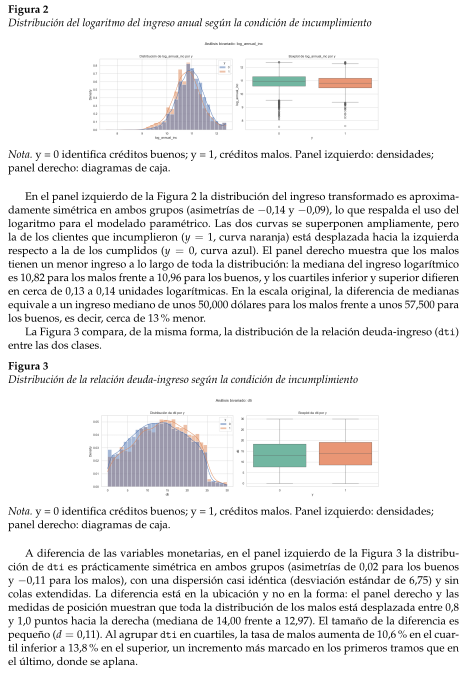
Figura 2Distribución del logaritmo del ingreso anual según la condición de incumplimientoNota. y = 0 identifica créditos buenos; y = 1, créditos malos. Panel izquierdo: densidades;panel derecho: diagramas de caja.En el panel izquierdo de la Figura 2 la distribución del ingreso transformado es aproxima-damente simétrica en ambos grupos (asimetrías de −0,14 y −0,09), lo que respalda el uso dellogaritmo para el modelado paramétrico. Las dos curvas se superponen ampliamente, perola de los clientes que incumplieron (y = 1, curva naranja) está desplazada hacia la izquierdarespecto a la de los cumplidos (y = 0, curva azul). El panel derecho muestra que los malostienen un menor ingreso a lo largo de toda la distribución: la mediana del ingreso logarítmicoes 10,82 para los malos frente a 10,96 para los buenos, y los cuartiles inferior y superior difierenen cerca de 0,13 a 0,14 unidades logarítmicas. En la escala original, la diferencia de medianasequivale a un ingreso mediano de unos 50,000 dólares para los malos frente a unos 57,500 paralos buenos, es decir, cerca de 13 % menor.La Figura 3 compara, de la misma forma, la distribución de la relación deuda-ingreso (dti)entre las dos clases.Figura 3Distribución de la relación deuda-ingreso según la condición de incumplimientoNota. y = 0 identifica créditos buenos; y = 1, créditos malos. Panel izquierdo: densidades;panel derecho: diagramas de caja.A diferencia de las variables monetarias, en el panel izquierdo de la Figura 3 la distribu-ción de dti es prácticamente simétrica en ambos grupos (asimetrías de 0,02 para los buenosy −0,11 para los malos), con una dispersión casi idéntica (desviación estándar de 6,75) y sincolas extendidas. La diferencia está en la ubicación y no en la forma: el panel derecho y lasmedidas de posición muestran que toda la distribución de los malos está desplazada entre 0,8y 1,0 puntos hacia la derecha (mediana de 14,00 frente a 12,97). El tamaño de la diferencia espequeño (d = 0,11). Al agrupar dti en cuartiles, la tasa de malos aumenta de 10,6 % en el cuar-til inferior a 13,8 % en el superior, un incremento más marcado en los primeros tramos que enel último, donde se aplana.
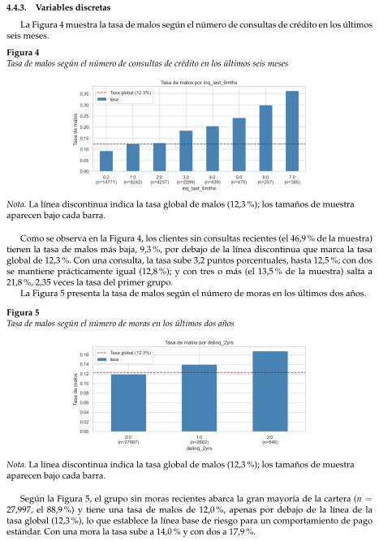
Variables discretas
4.4.3.Variables discretasLa Figura 4 muestra la tasa de malos según el número de consultas de crédito en los últimosseis meses.Figura 4Tasa de malos según el número de consultas de crédito en los últimos seis mesesNota. La línea discontinua indica la tasa global de malos (12,3 %); los tamaños de muestraaparecen bajo cada barra.Como se observa en la Figura 4, los clientes sin consultas recientes (el 46,9 % de la muestra)tienen la tasa de malos más baja, 9,3 %, por debajo de la línea discontinua que marca la tasaglobal de 12,3 %. Con una consulta, la tasa sube 3,2 puntos porcentuales, hasta 12,5 %; con dosse mantiene prácticamente igual (12,8 %); y con tres o más (el 13,5 % de la muestra) salta a21,8 %, 2,35 veces la tasa del primer grupo.La Figura 5 presenta la tasa de malos según el número de moras en los últimos dos años.Figura 5Tasa de malos según el número de moras en los últimos dos añosNota. La línea discontinua indica la tasa global de malos (12,3 %); los tamaños de muestraaparecen bajo cada barra.Según la Figura 5, el grupo sin moras recientes abarca la gran mayoría de la cartera (n =27,997, el 88,9 %) y tiene una tasa de malos de 12,0 %, apenas por debajo de la línea de latasa global (12,3 %), lo que establece la línea base de riesgo para un comportamiento de pagoestándar. Con una mora la tasa sube a 14,0 % y con dos a 17,9 %.
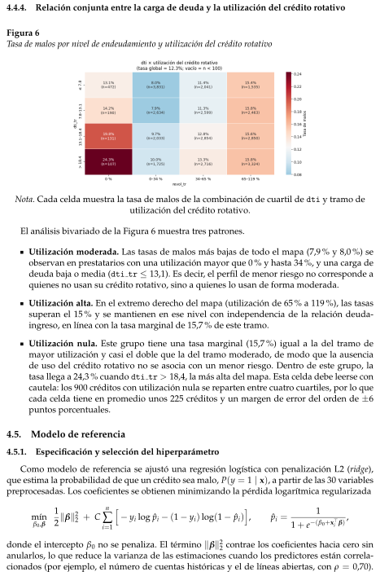
Relación conjunta entre la carga de deuda y la utilización del crédito rotativo
Modelo de referencia
Especificación y selección del hiperparámetro
4.4.4.Relación conjunta entre la carga de deuda y la utilización del crédito rotativoFigura 6Tasa de malos por nivel de endeudamiento y utilización del crédito rotativoNota. Cada celda muestra la tasa de malos de la combinación de cuartil de dti y tramo deutilización del crédito rotativo.El análisis bivariado de la Figura 6 muestra tres patrones.Utilización moderada. Las tasas de malos más bajas de todo el mapa (7,9 % y 8,0 %) seobservan en prestatarios con una utilización mayor que 0 % y hasta 34 %, y una carga dedeuda baja o media (dti tr ≤13,1). Es decir, el perfil de menor riesgo no corresponde aquienes no usan su crédito rotativo, sino a quienes lo usan de forma moderada.Utilización alta. En el extremo derecho del mapa (utilización de 65 % a 119 %), las tasassuperan el 15 % y se mantienen en ese nivel con independencia de la relación deuda-ingreso, en línea con la tasa marginal de 15,7 % de este tramo.Utilización nula. Este grupo tiene una tasa marginal (15,7 %) igual a la del tramo demayor utilización y casi el doble que la del tramo moderado, de modo que la ausenciade uso del crédito rotativo no se asocia con un menor riesgo. Dentro de este grupo, latasa llega a 24,3 % cuando dti tr > 18,4, la más alta del mapa. Esta celda debe leerse concautela: los 900 créditos con utilización nula se reparten entre cuatro cuartiles, por lo quecada celda tiene en promedio unos 225 créditos y un margen de error del orden de ±6puntos porcentuales.4.5.Modelo de referencia4.5.1.Especificación y selección del hiperparámetroComo modelo de referencia se ajustó una regresión logística con penalización L2 (ridge),que estima la probabilidad de que un crédito sea malo, P(y = 1 | x), a partir de las 30 variablespreprocesadas. Los coeficientes se obtienen minimizando la pérdida logarítmica regularizadamínβ0,β12∥β∥22 + Cn∑i=1h−yi log ˆpi −(1 −yi) log(1 −ˆpi)i,ˆpi =11 + e−(β0+x⊤i β) ,donde el intercepto β0 no se penaliza. El término ∥β∥22 contrae los coeficientes hacia cero sinanularlos, lo que reduce la varianza de las estimaciones cuando los predictores están correla-cionados (por ejemplo, el número de cuentas históricas y el de líneas abiertas, con ρ = 0,70).
Métricas de evaluación
Resultados en entrenamiento, validación y prueba
Como las variables numéricas se estandarizaron con los parámetros del conjunto de entrena-miento, la penalización actúa sobre una escala comparable para todas ellas. El parámetro C esel inverso de la intensidad de la regularización: valores pequeños implican mayor contracción(más sesgo y menos varianza) y valores grandes se aproximan al ajuste sin penalizar.El valor de C se eligió con el conjunto de validación, sin utilizar el de prueba, entre tre-ce valores equiespaciados en escala logarítmica, de 10−4 a 102 (dos por década). El criteriofue la pérdida logarítmica (LogLoss), una regla de puntuación propia que evalúa la calidadde las probabilidades y no solo el orden de los clientes, lo cual es coherente con el objetivode estimar la probabilidad de incumplimiento. Se fijó una tolerancia de 10−4 para conside-rar equivalentes las configuraciones con desempeño prácticamente igual, entre las cuales sehabría escogido la de menor C, es decir, el modelo más regularizado. En la práctica esta reglano fue necesaria: ninguna otra configuración quedó dentro de la tolerancia, pues los valoresvecinos (C = 0,00316 y C = 0,03162) tuvieron una pérdida de validación de 0,38824, mayor en3,6 × 10−4 que la del mínimo. Todas las configuraciones convergieron.La pérdida de entrenamiento disminuyó de forma monótona al aumentar C, como es espe-rable al relajar la penalización, mientras que la de validación alcanzó su mínimo en C = 0,01(LogLoss de 0,3879) y aumentó ligeramente para valores mayores. Esta forma de U de la pérdi-da de validación es la señal habitual del compromiso sesgo–varianza: más allá de C = 0,01 elmodelo se ajusta mejor a la muestra de entrenamiento, pero generaliza peor. Por ello se adoptóC = 0,01, un valor interior de la rejilla, que corresponde a una regularización fuerte.4.5.2.Métricas de evaluaciónSe emplearon métricas de dos tipos. Las de discriminación miden si el modelo ordena loscréditos de menor a mayor riesgo: el AUC es la probabilidad de que un cliente malo elegi-do al azar reciba una probabilidad estimada mayor que un cliente bueno; el índice de Gini es2 AUC −1; y el estadístico KS es la máxima distancia entre las distribuciones acumuladas delas probabilidades estimadas de buenos y malos. Las de calidad probabilística miden si los valo-res estimados son adecuados como probabilidades: el Brier Score es el error cuadrático medioentre la probabilidad estimada y el resultado observado; el LogLoss es la pérdida logarítmicamedia; y el Brier Skill Score (BSS) compara el Brier del modelo con el de una predicción nulaque asigna a todos los créditos la tasa de malos de entrenamiento (12,29 %), evaluada sobrecada conjunto, BSS = 1 −Briermodelo/Briernulo. Finalmente, la calibración se evaluó con la pro-babilidad media estimada frente a la tasa observada y con el intercepto y la pendiente de laregresión logística de y sobre el logit de ˆp, cuyos valores ideales son 0 y 1. Una pendiente ma-yor que uno indica probabilidades demasiado concentradas hacia la media, y una menor queuno, probabilidades demasiado extremas.4.5.3.Resultados en entrenamiento, validación y pruebaLa Tabla 11 resume el desempeño del modelo en los tres conjuntos.
Tabla 11Desempeño de la regresión logística L2 (C = 0,01) en los conjuntos de entrenamiento, validación yprueba.MétricaEntrenamientoValidaciónPruebaDiscriminaciónAUC0,68080,63670,6284Gini0,36160,27340,2567KS0,26180,19540,1887Calidad probabilísticaBrier Score0,10240,11570,1151Brier del modelo nuloa0,10780,11900,1178Brier Skill Score0,04990,02850,0229LogLoss0,34970,38790,3866LogLoss del modelo nuloa0,37270,40190,3986CalibraciónTasa observada de malos12,29 %13,78 %13,61 %Probabilidad media estimada12,29 %12,16 %12,57 %Intercepto de calibración—0,22130,0696Pendiente de calibración—1,03850,9870a Predicción constante igual a la tasa de malos de entrenamiento (12,29 %), evaluada sobre losresultados observados de cada conjunto.Entrenamiento y validación.El AUC pasó de 0,6808 a 0,6367 y el KS de 0,2618 a 0,1954,lo que indica una menor separación entre buenos y malos fuera de la muestra de ajuste. ElLogLoss aumentó de 0,3497 a 0,3879, pero este aumento no puede atribuirse por completo auna pérdida de capacidad predictiva. La tasa de malos subió de 12,29 % en entrenamiento a13,78 % en validación, y esto encarece el LogLoss incluso para la predicción nula, cuyo valorpasa de 0,3727 a 0,4019 (un aumento de 0,029, que equivale a cerca de tres cuartas partes delaumento de 0,038 del modelo). Medido contra esa referencia, el modelo mejora el LogLossen 0,023 en entrenamiento (6,2 %) y en 0,014 en validación (3,5 %). El BSS, que se mantienepositivo, muestra el mismo patrón (0,0499 y 0,0285). En consecuencia, la diferencia entre ambosconjuntos combina el optimismo propio de evaluar un modelo sobre los datos con que se ajustócon el cambio temporal de la población. Un cambio en la tasa base no modifica por sí solo elAUC, que depende únicamente del orden de las probabilidades; por ello la caída de 0,044 enesta métrica sí refleja una menor discriminación fuera de muestra, aunque no puede atribuirseexclusivamente al sobreajuste, pues también puede deberse a cambios en la composición delos clientes o en su relación con el incumplimiento.Prueba.En el conjunto de prueba, que no intervino en ninguna decisión de ajuste, el modeloobtuvo un AUC de 0,6284, un Gini de 0,2567 y un KS de 0,1887. Es decir, ante un cliente maloy uno bueno elegidos al azar, el modelo asigna mayor probabilidad al malo en el 62,8 % de loscasos. La curva ROC (Figura 7, izquierda) se ubica por encima de la diagonal, pero con unaseparación moderada, coherente con el AUC y el KS reportados. Se trata, por tanto, de unacapacidad de discriminación superior al azar, pero limitada. El Brier Score (0,1151) y el LogLoss(0,3866) son prácticamente iguales a los de validación, y el BSS (0,0229) indica una mejora de3,0 % en LogLoss y 2,3 % en Brier frente a la predicción nula. Las métricas de validación y deprueba son cercanas (el AUC difiere en 0,008), lo que sugiere un desempeño estable en los dossemestres posteriores al entrenamiento; la prueba, al no haberse empleado en la elección de C,es la estimación no sesgada del desempeño fuera de muestra.
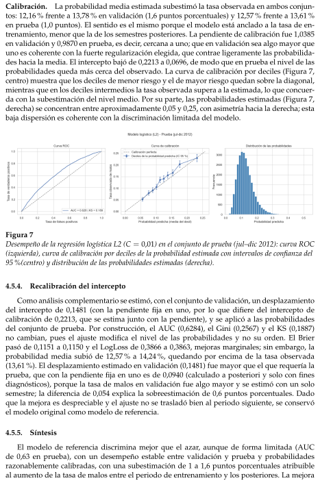
Recalibración del intercepto
Síntesis
Calibración.La probabilidad media estimada subestimó la tasa observada en ambos conjun-tos: 12,16 % frente a 13,78 % en validación (1,6 puntos porcentuales) y 12,57 % frente a 13,61 %en prueba (1,0 puntos). El sentido es el mismo porque el modelo está anclado a la tasa de en-trenamiento, menor que la de los semestres posteriores. La pendiente de calibración fue 1,0385en validación y 0,9870 en prueba, es decir, cercana a uno; que en validación sea algo mayor queuno es coherente con la fuerte regularización elegida, que contrae ligeramente las probabilida-des hacia la media. El intercepto bajó de 0,2213 a 0,0696, de modo que en prueba el nivel de lasprobabilidades queda más cerca del observado. La curva de calibración por deciles (Figura 7,centro) muestra que los deciles de menor riesgo y el de mayor riesgo quedan sobre la diagonal,mientras que en los deciles intermedios la tasa observada supera a la estimada, lo que concuer-da con la subestimación del nivel medio. Por su parte, las probabilidades estimadas (Figura 7,derecha) se concentran entre aproximadamente 0,05 y 0,25, con asimetría hacia la derecha; estabaja dispersión es coherente con la discriminación limitada del modelo.Figura 7Desempeño de la regresión logística L2 (C = 0,01) en el conjunto de prueba (jul–dic 2012): curva ROC(izquierda), curva de calibración por deciles de la probabilidad estimada con intervalos de confianza del95 %(centro) y distribución de las probabilidades estimadas (derecha).4.5.4.Recalibración del interceptoComo análisis complementario se estimó, con el conjunto de validación, un desplazamientodel intercepto de 0,1481 (con la pendiente fija en uno, por lo que difiere del intercepto decalibración de 0,2213, que se estima junto con la pendiente), y se aplicó a las probabilidadesdel conjunto de prueba. Por construcción, el AUC (0,6284), el Gini (0,2567) y el KS (0,1887)no cambian, pues el ajuste modifica el nivel de las probabilidades y no su orden. El Brierpasó de 0,1151 a 0,1150 y el LogLoss de 0,3866 a 0,3863, mejoras marginales; sin embargo, laprobabilidad media subió de 12,57 % a 14,24 %, quedando por encima de la tasa observada(13,61 %). El desplazamiento estimado en validación (0,1481) fue mayor que el que requería laprueba, que con la pendiente fija en uno es de 0,0940 (calculado a posteriori y solo con finesdiagnósticos), porque la tasa de malos en validación fue algo mayor y se estimó con un solosemestre; la diferencia de 0,054 explica la sobreestimación de 0,6 puntos porcentuales. Dadoque la mejora es despreciable y el ajuste no se trasladó bien al periodo siguiente, se conservóel modelo original como modelo de referencia.4.5.5.SíntesisEl modelo de referencia discrimina mejor que el azar, aunque de forma limitada (AUCde 0,63 en prueba), con un desempeño estable entre validación y prueba y probabilidadesrazonablemente calibradas, con una subestimación de 1 a 1,6 puntos porcentuales atribuibleal aumento de la tasa de malos entre el periodo de entrenamiento y los posteriores. La mejora
Red Neuronal
Cómo está hecha
empírica sobre la predicción nula es modesta (3 % en LogLoss en prueba) y su significanciaestadística no se ha establecido formalmente, lo cual es coherente con el análisis descriptivo,donde ninguna variable por sí sola presentó una asociación fuerte con el incumplimiento. Estosresultados constituyen el punto de comparación para los modelos posteriores.4.6.Red NeuronalSe construyó una red de dos capas (64 y 32 neuronas) que recibe los datos de un crédito ydevuelve su probabilidad de impago. Sus ajustes se eligieron mediante búsqueda aleatoria: seprobaron 40 combinaciones al azar y se seleccionó la que mejor separó a los clientes buenos ymalos en un semestre que la red no había analizado previamente.La idea de la red. La regresión logística asigna a cada variable un peso fijo, suma todo ylo convierte en una probabilidad. La red hace lo mismo, pero antes pasa los datos por capasde ¡¡neuronas¿¿. Cada neurona combina las variables a su manera, lo que le permite detectarcombinaciones que la regresión logística no logra ver. Por ejemplo, que un dti alto sea másgrave cuando el ingreso es bajo.ˆp = σ�W3 ReLU(W2 ReLU(W1x + b1) + b2) + b3Si se quitan las capas del medio, queda exactamente la regresión logística. Por eso la logísticaes la comparación justa: la red es la misma idea con más libertad.4.6.1.Cómo está hechaSe programó desde cero en NumPy (src/red neuronal.py), sin librerías de redes, con elfin de poder explicar cada paso. Todos los ajustes se encuentran en config.ini y se puedenmodificar en vivo con --set.Salida: una sigmoide, que deja el resultado entre 0 y 1. Ese número es la PD (probabilidadde incumplimiento).Qué aprende: minimiza la entropía cruzada, la misma medida de error de la regresiónlogística. Castiga severamente predecir ≪casi seguro paga≫a un cliente que finalmenteno pagó [1].Pesos iniciales: se sortean con una varianza ajustada al tamaño de cada capa (He paraReLU, Glorot para tanh). Si inician muy grandes o muy pequeños, la red no aprende [3,4].Cómo aprende: calcula cuánto contribuye cada peso al error (retropropagación) y lo co-rrige de forma gradual. Estos cálculos se comprobaron contra una aproximación numéri-ca.Datos. Solo créditos a 36 meses, separados por fecha:Tabla 12Conjuntos de datos y sus usosConjuntoPeriodoCréditosPara qué se usaEntrenamientojun-2007 a dic-201131.505La red aprende sus pesosValidaciónene a jun-201214.967Elegir los ajustes y cuándo pararPruebajul a dic-201228.458Nota final, una sola vez
Hiperparámetros
Método de búsqueda: búsqueda aleatoria
4.6.2.HiperparámetrosTabla 13Ajustes y evaluación del modeloAjusteQué hace, en sencillo ProbamosQuedóPor quéCapas yneuronasCuánta≪capacidad≫tiene lared para aprenderpatronesDe 1 capa de 8a 3 capas(64-32-16)64-32Tuvo el mejor AUC en validación (0,6381). Redes de16 a 64-32-16 quedaron casi iguales: la capacidad noera lo que limitaba.ActivaciónLa ≪curva≫que cadaneurona aplica; sinella, la red sería otralogísticaReLU, tanhReLURindieron igual (mediana 0,633 y 0,635); ReLU esmás simple y fue la del mejor modelo.Penalización L2Multa a los pesosgrandes, para que lared no se aprenda dememoria elentrenamiento [1]0,000001 a0,010,0014Con 4.097 pesos y 31.505 créditos, la red puedememorizar. Con Adam fue el ajuste más ligado alAUC: dentro del rango probado, más multa se asociócon mejor AUC en validación.DropoutApaga al azar el30 %de las neuronasen cada paso; la redno puede dependerde unas pocas [5]0 a 0,50,3Otro freno contra memorizar; ningún valor ganó conclaridad.OptimizadorLa regla para corregirlos pesos con elgradiente [6]Adam, SGDAdamFue más estable: mediana 0,635 contra 0,626 de SGD.Las 3 peores configuraciones fueron SGD, y Adamno depende tanto de acertar la tasa.Tasa deaprendizajeQué tan grande escada correcciónAdam 0,0001a 0,01; SGD0,001 a 0,10,0026Muy pequeña no aprende a tiempo; muy grandesalta y no se estabiliza. Con SGD fue decisiva: pordebajo de 0,002 el AUC cayó a 0,55–0,62. Con Adamcasi no influyó, porque Adam ajusta el paso por sucuenta.Tamaño de loteCuántos créditosmira la red antes decada corrección256, 512, 1024512Equilibrio entre rapidez y estabilidad.ParadatempranaDetiene elentrenamientocuando deja demejorar en validación[7]Fija: pacienciade 10 épocasParó enla época20 y sequedócon la 10Es el freno más directo: seguir entrenando solomejoraba el entrenamiento, no la validación.Nota. AUC = área bajo la curva ROC; SGD = descenso por gradiente estocástico.En la tabla 13 podemos ver la explicación los hiperparámetros de la red neuronal.Lo importante. Se utilizaron tres frenos contra la memorización (L2, dropout y parada tem-prana) porque la red tiene muchos más pesos que la regresión logística (4097 contra 31). Lapenalización L2 y la tasa de aprendizaje se sortearon en escala logarítmica: lo que importa essu orden de magnitud (0,001 contra 0,01), no el decimal exacto.4.6.3.Método de búsqueda: búsqueda aleatoriaEl método empleado fue la búsqueda aleatoria (random search). Se sortearon 40 combina-ciones de los siete hiperparámetros, se entrenó una red neuronal con cada una y se eligió lade mayor AUC en el conjunto de validación. También se probaron 5 regresiones logísticaspara fines de comparación. Todo el proceso tomó 9,7 minutos (scripts/parte1_pd/buscar_hiperparametros_pd.py; resultados disponibles en reports/busqueda_pd.csv).Para cada una de las 40 redes se asignó aleatoriamente un valor por hiperparámetro. Porejemplo: arquitectura 64-32, ReLU, L2 = 0,0014, dropout de 0,3, optimizador Adam, tasa de
Por qué una búsqueda aleatoria y no una grilla
Por qué no emplear métodos más sofisticados (búsqueda bayesiana)
Por qué evaluar con un semestre posterior
Hallazgos principales
Resultado: La red no le gana a la logística
aprendizaje de 0,0026 y tamaño de lote de 512. Posteriormente, se procedió al entrenamiento yse registró su AUC en validación. Finalmente, se seleccionó la mejor configuración; en caso deempate, se priorizó la de menor entropía cruzada.4.6.4.Por qué una búsqueda aleatoria y no una grillaUna grilla prueba todas las combinaciones de una lista fija. Con siete hiperparámetros ysolo 3 valores por cada uno, ya representarían 37 = 2187 entrenamientos.En la mayoría de los casos, importan pocos ajustes [8]. En este contexto, tuvieron mayorpeso la penalización L2 y, al emplear SGD, la tasa de aprendizaje. Una grilla repite losmismos 3 valores de cada ajuste importante, mientras que 40 sorteos evalúan 40 valoresdistintos de cada uno.Bergstra y Bengio (2012) demostraron que, con el mismo presupuesto computacional, labúsqueda aleatoria encuentra modelos con un desempeño igual o superior a los obteni-dos mediante una grilla [8].4.6.5.Por qué no emplear métodos más sofisticados (búsqueda bayesiana)La búsqueda bayesiana ahorra entrenamientos cuando cada uno es computacionalmentecostoso. En este caso, cada red tardó entre 1 y 80 segundos (con una mediana de 6 s). Además,las mejores configuraciones obtuvieron resultados prácticamente idénticos (como se detallamás adelante), por lo que realizar una búsqueda más fina no habría alterado las conclusiones.4.6.6.Por qué evaluar con un semestre posteriorEl modelo se utilizará para calificar créditos futuros. Por este motivo, cada red se evaluócon el periodo enero-junio de 2012, el cual es estrictamente posterior al periodo de entrena-miento. Mezclar los datos de diferentes años de forma aleatoria (por ejemplo, mediante k-foldcross-validation) habría premiado a las redes que no resisten los cambios poblacionales en losclientes a lo largo del tiempo. El conjunto de prueba (julio-diciembre de 2012) se mantuvocompletamente aislado durante la fase de búsqueda de hiperparámetros.4.6.7.Hallazgos principalesLas 10 mejores redes alcanzaron una AUC comprendida entre 0,6365 y 0,6381. Esta diferen-cia de 0,0016 es menor a la variación natural que presenta una misma red al ser reentrenadacon otra semilla aleatoria (±0,003); es decir, desde el punto de vista estadístico, se encuentranempatadas. La mejor regresión logística alcanzó una AUC de 0,6351, un valor sumamente cer-cano. El hecho de que casi cualquier red con parámetros razonables ofrezca un desempeñosimilar indica anticipadamente que en este conjunto de datos existen pocos patrones no linea-les aprovechables.(Bergstra y Bengio 2012), (Hyndman y Athanasopoulos 2021, sec. 5.10).4.6.8.Resultado: La red no le gana a la logísticaEn la prueba (jul-dic 2012), la red logró AUC 0,6251 y la logística de referencia 0,6284. Espoca diferencia, pero a favor de la logística. La referencia es la regresión logística del notebookdel equipo (scikit-learn, L2 con C elegido en validación); la red se compara con sus prediccionesguardadas en prueba.
Evaluación
Partición de los datos
Por qué se analizaron únicamente créditos a 36 meses
Tabla 14Medidas en pruebaMedida en pruebaRed 64-32LogísticaAUC0,62510,6284Diferencia de AUC (red –logística), bootstrap pareadode 1.000 réplicas−0, 0033 [−0, 0062;−0, 0004]—Diferencia de Brier, mismobootstrap≈0 (el intervaloincluye el 0)—AUC en 30 semillas (media ±desv.)0, 625 ± 0, 0030, 629 ± 0, 001 (réplica enNumPy, ver nota)Pesos que aprende4.09731Nota. AUC = área bajo la curva ROC; Brier = puntuación de Brier. El intervalo entre corchetescorresponde al intervalo bootstrap pareado de 1.000 réplicas.Como es visible ver en la tabla 14, salvo la fila de 30 semillas, la columna “Logística” co-rresponde a la obtenida en el notebook. Para repetir la regresión logística empleando distintassemillas, el modelo se reajustó utilizando el código implementado en NumPy como una redneuronal sin capas ocultas: con la semilla 42 se alcanzó una AUC de 0,6296, a una diferencia de0,001 respecto a la referencia, lo cual confirma la exactitud de la implementación desarrolladadesde cero. Esta réplica es la que se emplea finalmente en la aplicación y en la scorecard.4.7.Evaluación4.7.1.Partición de los datosTabla 15Conjuntos de datos, tasa de malos y sus usosConjuntoOriginaciónCréditosTasa de malosPara qué se usaEntrenamientojun 2007 – dic 201131.50512,3 %Ajustar los pesosValidaciónene – jun 201214.96713,8 %Elegir hiperparámetros(C de la logística; capas,L2, dropout de la red) yla época de paradaPruebajul – dic 201228.45813,6 %Medir el desempeñofinal, una sola vezLa tabla 15 resume las particiones temporales y los periodos excluidos por censura deldesenlace.4.7.2.Por qué se analizaron únicamente créditos a 36 mesesUn crédito revela su estado definitivo (cumplimiento o incumplimiento) únicamente alfinalizar su plazo. Los datos disponibles abarcan hasta el año 2015: un crédito a 36 meses ori-ginado en 2012 ya ha concluido, mientras que uno a 60 meses de 2011 aún podría encontrarseactivo. Si se combinaran, los créditos recientes de 60 meses podrían clasificarse erróneamente
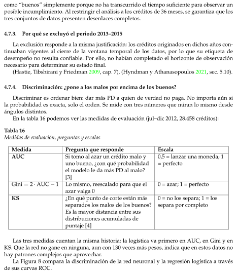
Por qué se excluyó el periodo 2013–2015
Discriminación: ¿pone a los malos por encima de los buenos?
como “buenos” simplemente porque no ha transcurrido el tiempo suficiente para observar unposible incumplimiento. Al restringir el análisis a los créditos de 36 meses, se garantiza que lostres conjuntos de datos presenten desenlaces completos.4.7.3.Por qué se excluyó el periodo 2013–2015La exclusión responde a la misma justificación: los créditos originados en dichos años con-tinuaban vigentes al cierre de la ventana temporal de los datos, por lo que su etiqueta dedesempeño no resulta confiable. Por ello, no habían completado el horizonte de observaciónnecesario para determinar su estado final.(Hastie, Tibshirani y Friedman 2009, cap. 7), (Hyndman y Athanasopoulos 2021, sec. 5.10).4.7.4.Discriminación: ¿pone a los malos por encima de los buenos?Discriminar es ordenar bien: dar más PD a quien de verdad no paga. No importa aún sila probabilidad es exacta, solo el orden. Se mide con tres números que miran lo mismo desdeángulos distintos.En la tabla 16 podemos ver las medidas de evaluación (jul–dic 2012, 28.458 créditos):Tabla 16Medidas de evaluación, preguntas y escalasMedidaPregunta que respondeEscalaAUCSi tomo al azar un crédito malo yuno bueno, ¿con qué probabilidadel modelo le da más PD al malo?[3]0,5 = lanzar una moneda; 1= perfectoGini = 2 · AUC −1Lo mismo, reescalado para que elazar valga 00 = azar; 1 = perfectoKS¿En qué punto de corte están másseparados los malos de los buenos?Es la mayor distancia entre susdistribuciones acumuladas depuntaje [4]0 = no los separa; 1 = lossepara por completoLas tres medidas cuentan la misma historia: la logística va primero en AUC, en Gini y enKS. Que la red no gane en ninguna, aun con 130 veces más pesos, indica que en estos datos nohay patrones complejos que aprovechar.La Figura 8 compara la discriminación de la red neuronal y la regresión logística a travésde sus curvas ROC.
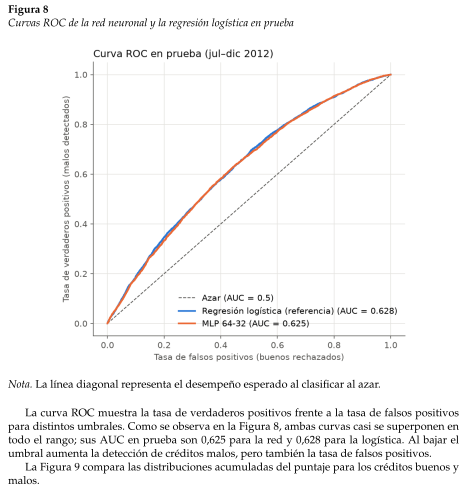
Figura 8Curvas ROC de la red neuronal y la regresión logística en pruebaNota. La línea diagonal representa el desempeño esperado al clasificar al azar.La curva ROC muestra la tasa de verdaderos positivos frente a la tasa de falsos positivospara distintos umbrales. Como se observa en la Figura 8, ambas curvas casi se superponen entodo el rango; sus AUC en prueba son 0,625 para la red y 0,628 para la logística. Al bajar elumbral aumenta la detección de créditos malos, pero también la tasa de falsos positivos.La Figura 9 compara las distribuciones acumuladas del puntaje para los créditos buenos ymalos.
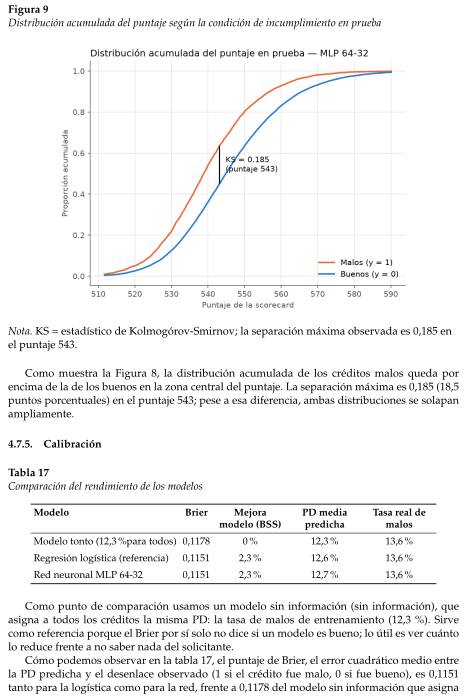
Calibración
Figura 9Distribución acumulada del puntaje según la condición de incumplimiento en pruebaNota. KS = estadístico de Kolmogórov-Smirnov; la separación máxima observada es 0,185 enel puntaje 543.Como muestra la Figura 8, la distribución acumulada de los créditos malos queda porencima de la de los buenos en la zona central del puntaje. La separación máxima es 0,185 (18,5puntos porcentuales) en el puntaje 543; pese a esa diferencia, ambas distribuciones se solapanampliamente.4.7.5.CalibraciónTabla 17Comparación del rendimiento de los modelosModeloBrierMejoramodelo (BSS)PD mediapredichaTasa real demalosModelo tonto (12,3 %para todos) 0,11780 %12,3 %13,6 %Regresión logística (referencia)0,11512,3 %12,6 %13,6 %Red neuronal MLP 64-320,11512,3 %12,7 %13,6 %Como punto de comparación usamos un modelo sin información (sin información), queasigna a todos los créditos la misma PD: la tasa de malos de entrenamiento (12,3 %). Sirvecomo referencia porque el Brier por sí solo no dice si un modelo es bueno; lo útil es ver cuántolo reduce frente a no saber nada del solicitante.Cómo podemos observar en la tabla 17, el puntaje de Brier, el error cuadrático medio entrela PD predicha y el desenlace observado (1 si el crédito fue malo, 0 si fue bueno), es 0,1151tanto para la logística como para la red, frente a 0,1178 del modelo sin información que asigna
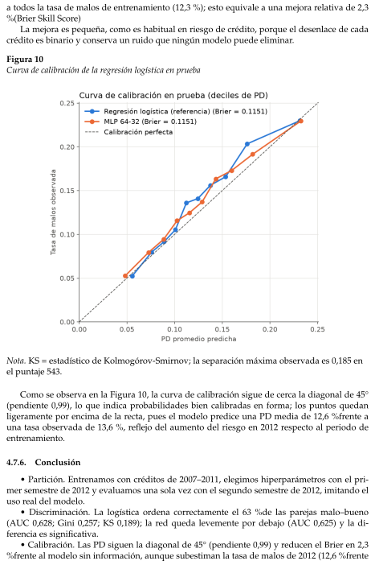
Conclusión
a todos la tasa de malos de entrenamiento (12,3 %); esto equivale a una mejora relativa de 2,3%(Brier Skill Score)La mejora es pequeña, como es habitual en riesgo de crédito, porque el desenlace de cadacrédito es binario y conserva un ruido que ningún modelo puede eliminar.Figura 10Curva de calibración de la regresión logística en pruebaNota. KS = estadístico de Kolmogórov-Smirnov; la separación máxima observada es 0,185 enel puntaje 543.Como se observa en la Figura 10, la curva de calibración sigue de cerca la diagonal de 45°(pendiente 0,99), lo que indica probabilidades bien calibradas en forma; los puntos quedanligeramente por encima de la recta, pues el modelo predice una PD media de 12,6 %frente auna tasa observada de 13,6 %, reflejo del aumento del riesgo en 2012 respecto al periodo deentrenamiento.4.7.6.Conclusión• Partición. Entrenamos con créditos de 2007–2011, elegimos hiperparámetros con el pri-mer semestre de 2012 y evaluamos una sola vez con el segundo semestre de 2012, imitando eluso real del modelo.• Discriminación. La logística ordena correctamente el 63 %de las parejas malo–bueno(AUC 0,628; Gini 0,257; KS 0,189); la red queda levemente por debajo (AUC 0,625) y la di-ferencia es significativa.• Calibración. Las PD siguen la diagonal de 45° (pendiente 0,99) y reducen el Brier en 2,3%frente al modelo sin información, aunque subestiman la tasa de malos de 2012 (12,6 %frente
Scorecard
De probabilidad a puntaje
a 13,6 %); un ajuste del intercepto lo corrige.• Efecto del tiempo. El AUC baja de 0,637 en validación a 0,628 en prueba y la tasa de malossube: el modelo envejece, algo que una partición aleatoria habría ocultado.• Decisión. Preferimos la logística: iguala o supera a la red con 31 parámetros en lugar de4.097.4.8.ScorecardUna scorecard expresa la PD como un puntaje, donde más puntos significan menos riesgo;como la transformación es monótona, conserva el orden de los clientes y, por tanto, la discri-minación del modeloLa escala se fija con tres números, elegidos por convención. Cambiarlos mueve o estira laescala, pero no cambia el orden de los clientesTabla 18Parámetros de escalamiento del puntajeParámetroNuestro valorQué significaOdds de referencia50:150 buenos por cada malo, o sea PD =1/51 ≈2 %Puntaje base600El puntaje que recibe quien tiene esasoddsPDO (puntos para duplicar lasodds)20Cada 20 puntos más, el riesgo relativose reduce a la mitadEn la tabla 18 podemos ver los parámeros de escalamiento para el puntaje.Fijamos un puntaje base de 600 para odds buenos:malos de 50:1 (PD ≈2 %) y un PDO de20, de modo que cada 20 puntos adicionales duplican las odds de ser buen pagador.El PDO (points to double the odds) es el número de puntos necesarios para duplicar lasodds de ser buen pagador. Los parámetros de la escala (puntaje base 600, odds de referencia50:1 y PDO 20) se tomaron de la convención habitual en la industria (Siddiqi 2006); son unaelección de escala y no afectan el orden de los clientes ni, por tanto, la discriminación delmodelo.4.8.1.De probabilidad a puntajeEl puntaje es una recta en el logaritmo de las odds: puntaje = A + B · ln(odds). Los tresparámetros fijan los dos números A y B.Derivación en tres pasos:1. Dos condiciones. Con odds 50 el puntaje vale 600: 600 = A + B · ln(50). Con odds 100 (eldoble) vale 620: 620 = A + B · ln(100).2. Restar las dos: 20 = B[ln(100) −ln(50)] = B ln(2), así que B = PDO/ ln 2 = 20/0,693 =28,85.3. Despejar A: A = 600 −28,85 ln(50) = 600 −112,88, así que A = 487,12.Resultado: puntaje = 487,12 + 28,85 ln[(1 −PD)/PD].
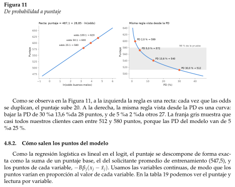
Cómo salen los puntos del modelo
Figura 11De probabilidad a puntajeComo se observa en la Figura 11, a la izquierda la regla es una recta: cada vez que las oddsse duplican, el puntaje sube 20. A la derecha, la misma regla vista desde la PD es una curva:bajar la PD de 30 %a 13,6 %da 28 puntos, y de 5 %a 2 %da otros 27. La franja gris muestra quecasi todos nuestros clientes caen entre 512 y 580 puntos, porque las PD del modelo van de 5%a 25 %.4.8.2.Cómo salen los puntos del modeloComo la regresión logística es lineal en el logit, el puntaje se descompone de forma exac-ta como la suma de un puntaje base, el del solicitante promedio de entrenamiento (547,5), ylos puntos de cada variable, −Bβj(xj −¯xj). Usamos las variables continuas, de modo que lospuntos varían en proporción al valor de cada variable. En la tabla 19 podemos ver el puntaje ylectura por variable.
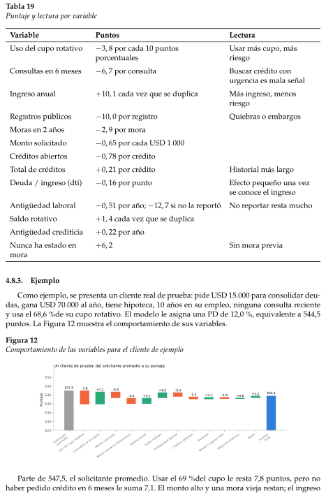
Ejemplo
Tabla 19Puntaje y lectura por variableVariablePuntosLecturaUso del cupo rotativo−3, 8 por cada 10 puntosporcentualesUsar más cupo, másriesgoConsultas en 6 meses−6, 7 por consultaBuscar crédito conurgencia es mala señalIngreso anual+10, 1 cada vez que se duplicaMás ingreso, menosriesgoRegistros públicos−10, 0 por registroQuiebras o embargosMoras en 2 años−2, 9 por moraMonto solicitado−0, 65 por cada USD 1.000Créditos abiertos−0, 78 por créditoTotal de créditos+0, 21 por créditoHistorial más largoDeuda / ingreso (dti)−0, 16 por puntoEfecto pequeño una vezse conoce el ingresoAntigüedad laboral−0, 51 por año; −12, 7 si no la reportóNo reportar resta muchoSaldo rotativo+1, 4 cada vez que se duplicaAntigüedad crediticia+0, 22 por añoNunca ha estado enmora+6, 2Sin mora previa4.8.3.EjemploComo ejemplo, se presenta un cliente real de prueba: pide USD 15.000 para consolidar deu-das, gana USD 70.000 al año, tiene hipoteca, 10 años en su empleo, ninguna consulta recientey usa el 68,6 %de su cupo rotativo. El modelo le asigna una PD de 12,0 %, equivalente a 544,5puntos. La Figura 12 muestra el comportamiento de sus variables.Figura 12Comportamiento de las variables para el cliente de ejemploParte de 547,5, el solicitante promedio. Usar el 69 %del cupo le resta 7,8 puntos, pero nohaber pedido crédito en 6 meses le suma 7,1. El monto alto y una mora vieja restan; el ingreso
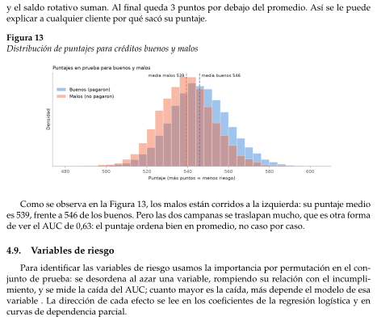
Variables de riesgo
y el saldo rotativo suman. Al final queda 3 puntos por debajo del promedio. Así se le puedeexplicar a cualquier cliente por qué sacó su puntaje.Figura 13Distribución de puntajes para créditos buenos y malosComo se observa en la Figura 13, los malos están corridos a la izquierda: su puntaje medioes 539, frente a 546 de los buenos. Pero las dos campanas se traslapan mucho, que es otra formade ver el AUC de 0,63: el puntaje ordena bien en promedio, no caso por caso.4.9.Variables de riesgoPara identificar las variables de riesgo usamos la importancia por permutación en el con-junto de prueba: se desordena al azar una variable, rompiendo su relación con el incumpli-miento, y se mide la caída del AUC; cuanto mayor es la caída, más depende el modelo de esavariable . La dirección de cada efecto se lee en los coeficientes de la regresión logística y encurvas de dependencia parcial.
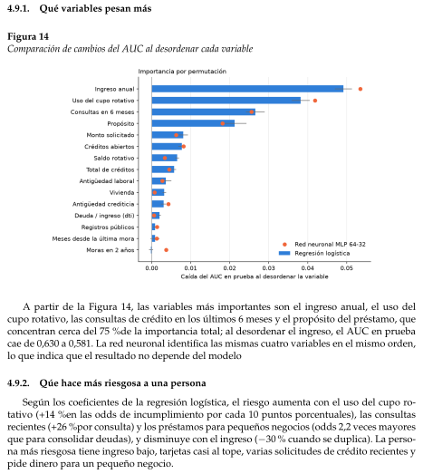
Qué variables pesan más
Qúe hace más riesgosa a una persona
4.9.1.Qué variables pesan másFigura 14Comparación de cambios del AUC al desordenar cada variableA partir de la Figura 14, las variables más importantes son el ingreso anual, el uso delcupo rotativo, las consultas de crédito en los últimos 6 meses y el propósito del préstamo, queconcentran cerca del 75 %de la importancia total; al desordenar el ingreso, el AUC en pruebacae de 0,630 a 0,581. La red neuronal identifica las mismas cuatro variables en el mismo orden,lo que indica que el resultado no depende del modelo4.9.2.Qúe hace más riesgosa a una personaSegún los coeficientes de la regresión logística, el riesgo aumenta con el uso del cupo ro-tativo (+14 %en las odds de incumplimiento por cada 10 puntos porcentuales), las consultasrecientes (+26 %por consulta) y los préstamos para pequeños negocios (odds 2,2 veces mayoresque para consolidar deudas), y disminuye con el ingreso (−30 % cuando se duplica). La perso-na más riesgosa tiene ingreso bajo, tarjetas casi al tope, varias solicitudes de crédito recientes ypide dinero para un pequeño negocio.
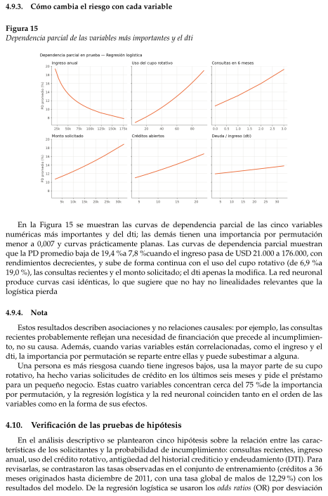
Cómo cambia el riesgo con cada variable
Nota
Verificación de las pruebas de hipótesis
4.9.3.Cómo cambia el riesgo con cada variableFigura 15Dependencia parcial de las variables más importantes y el dtiEn la Figura 15 se muestran las curvas de dependencia parcial de las cinco variablesnuméricas más importantes y del dti; las demás tienen una importancia por permutaciónmenor a 0,007 y curvas prácticamente planas. Las curvas de dependencia parcial muestranque la PD promedio baja de 19,4 %a 7,8 %cuando el ingreso pasa de USD 21.000 a 176.000, conrendimientos decrecientes, y sube de forma continua con el uso del cupo rotativo (de 6,9 %a19,0 %), las consultas recientes y el monto solicitado; el dti apenas la modifica. La red neuronalproduce curvas casi idénticas, lo que sugiere que no hay no linealidades relevantes que lalogística pierda4.9.4.NotaEstos resultados describen asociaciones y no relaciones causales: por ejemplo, las consultasrecientes probablemente reflejan una necesidad de financiación que precede al incumplimien-to, no su causa. Además, cuando varias variables están correlacionadas, como el ingreso y eldti, la importancia por permutación se reparte entre ellas y puede subestimar a alguna.Una persona es más riesgosa cuando tiene ingresos bajos, usa la mayor parte de su cuporotativo, ha hecho varias solicitudes de crédito en los últimos seis meses y pide el préstamopara un pequeño negocio. Estas cuatro variables concentran cerca del 75 %de la importanciapor permutación, y la regresión logística y la red neuronal coinciden tanto en el orden de lasvariables como en la forma de sus efectos.4.10.Verificación de las pruebas de hipótesisEn el análisis descriptivo se plantearon cinco hipótesis sobre la relación entre las carac-terísticas de los solicitantes y la probabilidad de incumplimiento: consultas recientes, ingresoanual, uso del crédito rotativo, antigüedad del historial crediticio y endeudamiento (DTI). Pararevisarlas, se contrastaron las tasas observadas en el conjunto de entrenamiento (créditos a 36meses originados hasta diciembre de 2011, con una tasa global de malos de 12,29 %) con losresultados del modelo. De la regresión logística se usaron los odds ratios (OR) por desviación
estándar y, de la red neuronal, la importancia por permutación y las curvas de dependenciaparcial. Además, se calculó el Information Value (IV), una medida univariada de la capacidadde una variable para separar buenos y malos pagadores; como referencia habitual, un IV me-nor de 0,02 indica poca capacidad de separación y entre 0,02 y 0,1 se considera débil. Estasherramientas describen el comportamiento del modelo y no establecen relaciones causales.Hipótesis 1. A mayor número de consultas crediticias en los últimos seis meses, mayor probabilidad deincumplimiento.La tasa de incumplimiento aumenta de 9,30 %en los solicitantes sin consultas a 12,46 %conuna consulta, 12,84 %con dos y 21,83 %con tres o más. Esta es la variable con mayor IV entre lasanalizadas (0,124). En la regresión logística el OR es 1,39 por desviación estándar (p < 0,001).En la red neuronal, la caída media del AUC al permutarla es cercana a 0,0256 y su curva dedependencia parcial es creciente. Por tanto, la hipótesis está respaldada.Hipótesis 2. A menor ingreso anual, mayor probabilidad de incumplimiento, tanto en términos margi-nales como al controlar por las demás variables.Por deciles, la tasa baja de 17,83 %en el grupo de menor ingreso a 8,39 %en el noveno decil;en el decil más alto hay un leve repunte (9,98 %) que no altera la tendencia general decreciente.Al controlar por las demás variables el efecto se mantiene: el OR del logaritmo del ingreso es0,75 por desviación estándar (p < 0,001). En la red neuronal, el ingreso anual es la variable conmayor importancia por permutación (caída media del AUC cercana a 0,0535) y la probabilidadestimada disminuye, en promedio, al aumentar el ingreso. La hipótesis está respaldada.Hipótesis 3. A mayor utilización del crédito rotativo, mayor probabilidad de incumplimiento entre quie-nes usan este tipo de crédito.Entre los solicitantes con utilización mayor que cero, la tasa de incumplimiento pasa de7,43 %en el decil de menor utilización a 18,45 %en el de mayor. El OR en la regresión logística es1,49 por desviación estándar (p < 0,001) y el IV es 0,079. En la red neuronal, la caída media delAUC es cercana a 0,0419 y la dependencia parcial es creciente. Los 900 créditos con utilizaciónde 0 %presentan una tasa de 15,67 %, razón por la cual la hipótesis se acota a quienes usancrédito rotativo. La hipótesis está respaldada.Hipótesis 4. A mayor antigüedad del historial crediticio, menor probabilidad de incumplimiento.La tasa baja de 16,99 %en el decil de historiales más cortos (hasta 67 meses) a 9,83 %en elde más largos (más de 269 meses). Entre los deciles intermedios las diferencias son pequeñasy no del todo monótonas (entre 11,3 %y 13,3 %), por lo que la diferencia marginal se concentraen los historiales más cortos. Al controlar por las demás variables el signo se mantiene: OR de0,94 por desviación estándar (p = 0,005). El IV es 0,026 y la caída media del AUC en la redneuronal es cercana a 0,0043. La hipótesis está respaldada, con efecto modesto.Hipótesis 5. A mayor relación deuda-ingreso (DTI), mayor probabilidad de incumplimiento.En los deciles, la tasa pasa de 11,06 %en el grupo de menor DTI a 14,38 %en el de mayorDTI, un aumento de unos 3,3 puntos porcentuales con algunas irregularidades intermedias(por ejemplo, 10,30 %en el segundo decil). Al controlar por las demás variables, el efecto esdébil: OR de 1,04 por desviación estándar (p = 0,057). El IV es 0,014 y el DTI tiene la menorimportancia por permutación entre las variables de la red (caída media del AUC cercana a0,0006); su dependencia parcial es relativamente plana. La hipótesis se considera parcialmenterespaldada: la dirección coincide con lo propuesto, pero el salto descriptivo es moderado y elefecto condicional es débil.En conjunto, cuatro de las cinco hipótesis quedan respaldadas. Las de consultas recientes,uso del crédito rotativo e ingreso anual tienen la evidencia más sólida, pues coinciden las tasasdescriptivas, el IV, los OR y el comportamiento de la red neuronal. La de antigüedad del histo-rial se respalda con un efecto más modesto. El orden por IV (consultas, uso del cupo, ingreso,antigüedad del historial y DTI) es coherente con el orden de importancia por permutación
Discusión y regla de comparación justa
¿Qué aportó la red frente a la logística?
variabilidad entre semillas
Costo computacional
de la red. El DTI recibe apoyo parcial y es la variable de menor aporte entre las cinco. Estasconclusiones describen asociaciones en la población y el periodo analizados; no indican quemodificar una característica del solicitante produzca por sí mismo un cambio en la probabili-dad de incumplimiento.4.11.Discusión y regla de comparación justaPara una comparación justa, la regresión logística y la red usan los mismos datos, preproce-samiento y particiones; ambas se ajustan con validación (5 y 40 configuraciones) y la diferenciaen prueba se evalúa con 30 semillas y un bootstrap pareado4.11.1.¿Qué aportó la red frente a la logística?Respuesta corta: nada en desempeño, y costó más. Vamos por los cuatro criterios.Tabla 20Comparación de métricas entre modelosMétricaLogísticaRed MLP 64-32MejorAUC0,6290,625LogísticaGini0,2580,251LogísticaKS0,1890,187EmpateBrier0,11500,1151EmpateComo se observa en la Tabla 20, en prueba la red no supera a la regresión logística: su AUCes 0,003 menor (IC del 95%: [−0,006; −0,0004]) y su Brier es igual.4.11.2.variabilidad entre semillasLa logística de esta comparación no es la del notebook (sklearn), sino una equivalente en-trenada con nuestro código en NumPy, con la que se pueden variar las semillas; sus resultadosen prueba son prácticamente iguales (AUC 0,630 frente a 0,628; Brier 0,1150 frente a 0,1151).Tabla 21AUC en prueba con 30 semillasAUC en prueba (30 semillas)LogísticaRedDesviación estándar0,00070,0031Peor0,6270,618Mejor0,6300,633Como es visible en la tabla 21, la red es cuatro veces más sensible a la semilla (desviacióndel AUC 0,0031 frente a 0,0007); una sola corrida no basta para compararlas.4.11.3.Costo computacionalComo puede observarse en la tabla 22 la red usa 130 veces más parámetros y 25 veces mástiempo de búsqueda para un desempeño igual o peor.
Interpratibilidad
Resultado Final
Aprendizajes
Punto 2
Fundamentación metodológica del punto 2
Problema de estimación
Tabla 22Comparativa de complejidad y tiempos de cómputoLogísticaRedRazónParámetros314.097≈130×Búsqueda dehiperparámetros5 configuraciones, 22 s40 configuraciones, 559 s≈25×Un entrenamiento final1,7 s5,5 s≈3×4.11.4.InterpratibilidadTabla 23Comparación de interpretabilidad entre regresión logística y red neuronalLogísticaRedEfecto de cada va-riableDirecto: un coeficiente = un oddsratio.Indirecto: hay que estimarlo conpermutación y dependencia par-cial.ScorecardExacta: los puntos suman el pun-taje sin residuo.Aproximada: queda un residuode interacción.¿Qué variables im-portan?Ingreso, uso del cupo, consultas,propósito.Las mismas cuatro, en el mismoorden.Al ver la tabla 23 ambos modelos señalan las mismas variables de riesgo con el mismosentido, pero solo la logística lo hace de forma directa y auditable4.11.5.Resultado FinalLa red neuronal no aportó capacidad predictiva frente a la regresión logística: igual cali-bración, AUC ligeramente menor, cuatro veces más variabilidad, 130 veces más parámetros ymenos interpretabilidad. Por parsimonia, el modelo recomendado es la regresión logística. Loque sí aportó la red fue evidencia: al no encontrar nada que la logística no viera, confirma queel riesgo en estos datos es esencialmente aditivo.4.11.6.Aprendizajes- Una red con 4.097 parámetros no encontró interacciones que la logística no capturara.- El dti casi no importa aquí. Es una variable clásica de crédito, pero su importancia es de0,002; su efecto ya lo recogen el ingreso y el uso del cupo.5.Punto 25.1.Fundamentación metodológica del punto 25.1.1.Problema de estimaciónLa pérdida dado el incumplimiento, o LGD (Loss Given Default), representa la severidad depérdida condicionada a que un crédito incumpla. A diferencia de la probabilidad de incum-plimiento (PD), la LGD describe cuánto se pierde cuando ocurre dicho evento.
Definición de la variable objetivo
Población de análisis
Variables predictoras y fuga de información
Preprocesamiento y particiones
El objetivo predictivo es estimar la severidad esperada a partir de características del créditodisponibles en el momento definido para la decisión:m(x) = E [LGD | D = 1, X = x] ,donde D = 1 indica incumplimiento y X representa las variables predictoras.5.2.Definición de la variable objetivoEn este trabajo se utiliza la siguiente aproximación:LGDproxyi= 1 −total rec prncpifunded amnti.El campo funded amnt corresponde al monto originalmente financiado. El diccionario delconjunto describe total rec prncp como el capital recibido a la fecha. Por tanto, la proxyexpresa la proporción del capital original no cubierta por ese capital recibido.El cálculo requiere un monto financiado estrictamente positivo y valores finitos en amboscampos. Los objetivos fuera del intervalo [0, 1] deben investigarse antes del modelamiento, enlugar de recortarse sin justificación.Esta medida no incorpora explícitamente recuperaciones netas posteriores al castigo, costoscompletos de cobranza ni descuento temporal. Tampoco utiliza la exposición histórica exactaen el momento del incumplimiento. En consecuencia, se interpreta como una proxy sobre ca-pital original y no como una LGD económica o regulatoria exacta.5.2.1.Población de análisisLa muestra incluye únicamente créditos con estado Charged Off o Default. Esta selec-ción permite mantener la población de los experimentos iniciales de severidad, pero tiene unalcance restringido.La muestra no equivale a toda la clase positiva de PD definida en el enunciado, que tam-bién incluye Late (31-120 days) y Does not meet the credit policy. Status:ChargedOff. Por ello, la aplicación de la severidad estimada a esos estados requiere una justificaciónadicional o una ampliación de la muestra con posterior reentrenamiento.Además, las recuperaciones pueden no haber concluido en la fecha de observación. Estacensura limita la interpretación de la pérdida como definitiva.5.2.2.Variables predictoras y fuga de informaciónLas predictoras deben ser coherentes con el momento en que se utilizará el modelo. Parauna decisión al originar el préstamo, únicamente corresponde emplear información disponibleen ese momento.Los campos posteriores al otorgamiento utilizados para construir el objetivo no debenincorporarse como predictores. En particular, total_rec_prncp, recoveries y collection_recovery_fee contienen información sobre el comportamiento posterior del crédito.La inclusión de información futura produciría fuga de información y una evaluación queno representaría las condiciones de uso del modelo.5.2.3.Preprocesamiento y particionesLa imputación de valores ausentes, la estandarización y la codificación de categorías seajustan exclusivamente con el conjunto de entrenamiento. Las transformaciones obtenidas seaplican después a validación, prueba y nuevos créditos.
Modelo de referencia: regresión lineal
Variables indicadoras
Neurona artificial y perceptrón multicapa
Para una variable numérica, la estandarización se expresa como:zij = xij −µj,trainsj,train,donde µj,train y sj,train se calculan únicamente en entrenamiento.El flujo actual de LGD utiliza particiones aleatorias de aproximadamente 60 %para entre-namiento, 20 %para validación y 20 %para prueba, con semilla de partición fija. Esta divisiónno constituye una evaluación temporal.La referencia y la red comparten las mismas observaciones, variables transformadas y par-ticiones. El conjunto de validación se utiliza para elegir configuraciones; prueba se reserva paraevaluar las decisiones ya fijadas.5.2.4.Modelo de referencia: regresión linealLa regresión lineal representa la LGD mediante:LGDproxyi= β0 + xTi β + εi.Los parámetros se estiman por mínimos cuadrados ordinarios:(bβ0, bβ) ∈arg minβ0,βn∑i=1yi −β0 −xTi β2.La predicción es:byi = bβ0 + xTi bβ.Este modelo constituye una referencia de baja complejidad. Sin embargo, su salida no estárestringida a [0, 1], por lo que deben reportarse las predicciones que queden fuera de ese inter-valo.5.2.5.Variables indicadorasLas variables categóricas pueden representarse mediante indicadoras:Iig =(1,si el crédito i pertenece a la categoría g,0,en otro caso.En una parametrización con intercepto y una categoría de referencia se utilizan k −1 indi-cadoras para una variable con k categorías. Cada efecto se expresa como el producto entre sucoeficiente y la indicadora correspondiente:βgIig.El coeficiente y la indicadora no son intercambiables: el primero cuantifica un efecto esti-mado y la segunda identifica la pertenencia a una categoría.5.2.6.Neurona artificial y perceptrón multicapaUna neurona calcula una combinación lineal de sus entradas y aplica una función de acti-vación:zj =p∑r=1wjrxr + bj,aj = g(zj).
Funciones de activación
Función de pérdida
Un perceptrón multicapa encadena estas transformaciones:a(0) = x,z(ℓ) = W(ℓ)a(ℓ−1) + b(ℓ),a(ℓ) = gℓz(ℓ).Las capas ocultas permiten representar relaciones no lineales. El modelo utilizado reutilizala implementación de Manuel, desarrollada con NumPy.5.2.7.Funciones de activaciónLas activaciones ocultas consideradas son ReLU y tangente hiperbólica:ReLU(z) = máx(0, z),tanh(z) = ez −e−zez + e−z .Sus derivadas son:ReLU′(z) =(1,z > 0,0,z ≤0,tanh′(z) = 1 −tanh2(z).Para la salida de LGD se utiliza la sigmoide:σ(z) =11 + e−z ,σ′(z) = σ(z) [1 −σ(z)] .Su rango matemático es (0, 1), coherente con la naturaleza acotada de la proxy. Los valoresexactos 0 y 1 se aproximan, pero no se alcanzan con parámetros finitos en aritmética exacta.5.2.8.Función de pérdidaEl error cuadrático medio se define como:JMSE = 1nn∑i=1(yi −byi)2 .Para una variable aleatoria Y, se cumple:E(Y −a)2 | X = Var(Y | X) + (E[Y | X] −a)2 .Por tanto, el predictor que minimiza la pérdida cuadrática esperada es la media condicio-nal:a∗(X) = E[Y | X].Además, bajo un modelo auxiliar Yi | xi ∼N ( fθ(xi), σ2), con varianza fija, la log-verosimilitud negativa es:−log L(θ) = n2 log(2πσ2) +12σ2n∑i=1(yi −fθ(xi))2 .Minimizarla respecto a θ equivale a minimizar el error cuadrático. Esta equivalencia noimplica afirmar que la LGD, que es acotada, tenga una distribución gaussiana exacta.
Regularización
Retropropagación
Optimizador Adam
5.3.RegularizaciónLa penalización L2 modifica la función objetivo:J(θ) = JMSE(θ) + λ2L∑ℓ=1W(ℓ)2F ,sin penalizar los sesgos.El dropout invertido transforma una activación oculta durante entrenamiento mediante:ea = m ⊙a1 −q ,mj ∼Bernoulli(1 −q),donde q es la probabilidad de desactivación. Durante inferencia se utiliza la red completa, sinaplicar dropout.La parada temprana supervisa la pérdida de validación y detiene el entrenamiento cuandono mejora durante un número predefinido de épocas. Se restauran los pesos de la mejor épocade validación.5.3.1.RetropropagaciónPara un mini-lote de tamaño B, la combinación MSE y salida sigmoide produce:δ(L)i= 2B (byi −yi) σ′z(L)i.Sin dropout, las capas ocultas satisfacen:δ(ℓ)i=W(ℓ+1)Tδ(ℓ+1)i⊙g′ℓz(ℓ)i.Si se aplica dropout, se incorpora también el factor de la máscara utilizado en la propaga-ción hacia adelante.Los gradientes, incluyendo L2, son:∂J∂W(ℓ) =B∑i=1δ(ℓ)ia(ℓ−1)iT+ λW(ℓ),∂J∂b(ℓ) =B∑i=1δ(ℓ)i.5.4.Optimizador AdamPara un gradiente gt, Adam actualiza los momentos:mt = β1mt−1 + (1 −β1)gt,vt = β2vt−1 + (1 −β2)g⊙2t .Las correcciones de sesgo son:bmt =mt1 −βt1,bvt =vt1 −βt2.Finalmente:θt+1 = θt −ηbmt√bvt + ϵ,con operaciones elemento a elemento.
Evaluación
Experimentos y variabilidad
Pérdida esperada y exposición
5.4.1.EvaluaciónLas métricas principales son:MAE = 1nn∑i=1|yi −byi|,RMSE =s1nn∑i=1(yi −byi)2.Ambas se expresan en unidades de LGD. Multiplicadas por 100 se interpretan en puntosporcentuales, no como porcentajes relativos de error ni como exactitud.La comparación de distribuciones utiliza medias, desviaciones estándar, cuantiles, histo-gramas y funciones de distribución empíricas:bFn(t) = 1nn∑i=1I(yi ≤t).Una media predicha cercana a la observada no demuestra que coincidan sus distribuciones.La menor dispersión de las predicciones puede ser coherente con estimar una media condicio-nal.5.4.2.Experimentos y variabilidadLa selección de hiperparámetros se realiza con validación, declarando el número de confi-guraciones y el tiempo de cómputo.La configuración neuronal final se entrena con al menos 30 semillas distintas, manteniendofijas las particiones. Para una métrica M se reportan:M = 1SS∑s=1Ms,sM =vuut1S −1S∑s=1(Ms −M)2,además del mejor y peor resultado. Para MAE y RMSE, menor es mejor.Esta variabilidad describe diferencias entre inicializaciones y aleatoriedad del entrenamien-to; no representa por sí sola incertidumbre por muestreo de la población.El número de parámetros de una red densa es:P =L∑ℓ=1(nℓ−1nℓ+ nℓ) .5.4.3.Pérdida esperada y exposiciónPara mantener coherencia con el denominador de la proxy se utiliza:EADproxyi= funded amnti.La estimación monetaria es:cELproxyi= dPDi · [LGDproxyi· EADproxyi.
Prompts representativos del punto 2
Resultados empíricos y comparación justa (Regresión OLS vs. Red MLP)
Modelo de referencia: regresión lineal por mínimos cuadrados (OLS)
Con monto original fijo Mi, la justificación es:E[Lproxyi| Xi, Mi] = P(Di = 1 | Xi, Mi)E[LGDproxyi| Di = 1, Xi, Mi]Mi.No es necesario asumir independencia entre incumplimiento y severidad, pues la LGD yaestá condicionada al incumplimiento.Si la exposición fuera aleatoria, la expresión general sería:E[L | X] = PD(X)E[LGD · EAD | D = 1, X].Separar esta última esperanza en un producto de esperanzas requeriría condiciones adicio-nales.La combinación debe conservar identificadores, unidades monetarias, población y hori-zonte. Una evaluación independiente de la pérdida conjunta requiere créditos que no se hayanutilizado para ajustar ni seleccionar ninguno de los dos modelos.5.4.4.Prompts representativos del punto 2Durante el desarrollo del punto 2 se utilizó IA como apoyo para integrar el código, verificarla coherencia metodológica, organizar los experimentos y documentar los resultados.Nota. Los prompts se reconstruyeron de forma representativa y no constituyen transcripciones literales.La IA facilitó la organización del código y la identificación de requisitos que debían eva-luarse conjuntamente. Sin embargo, las propuestas requirieron revisión metodológica. En par-ticular, se distinguió entre la LGD proxy calculada sobre el capital originalmente financiadoy una LGD económica basada en la exposición histórica al incumplimiento. También se reco-noció que una demostración con datos reducidos no sustituye los experimentos finales con 30semillas.Para la comparación entre modelos se estableció el uso de las mismas observaciones, trans-formaciones y particiones. La configuración neuronal se selecciona con validación, mientrasque el conjunto de prueba se reserva para la evaluación. La discusión automática resume losarchivos de la corrida, pero debe revisarse antes de incorporarla al reporte.La combinación de PD y LGD exige comprobar que ambos modelos reciban característicasdel mismo crédito, que sus poblaciones y horizontes sean compatibles y que la exposición utili-zada sea coherente con el denominador de LGD. Por ello, disponer del código no se consideróevidencia suficiente de que el cálculo conjunto estuviera validado.5.5.Resultados empíricos y comparación justa (Regresión OLS vs. Red MLP)En esta sección se reportan los resultados de la estimación de la pérdida dado el incum-plimiento (LGD), contrastando el modelo lineal de referencia con el perceptrón multicapa bajola regla de comparación justa exigida por el enunciado: mismos datos procesados, mismasparticiones fijas (60 %entrenamiento, 20 %validación y 20 %prueba), presupuesto explícito debúsqueda y 30 corridas independientes.5.5.1.Modelo de referencia: regresión lineal por mínimos cuadrados (OLS)Como modelo econométrico de baja complejidad se ajustó una regresión lineal clásica me-diante mínimos cuadrados ordinarios sobre las 27,879 observaciones de entrenamiento, eva-luándose sobre los 9,294 créditos del conjunto de prueba.La Tabla 26 resume las métricas de desempeño y la complejidad del modelo lineal.
Tabla 24Prompts representativos del uso de inteligencia artificial en el desarrollo del punto 2 (parte 1 de 2)EtapaPrompt representativo reconstruidoPropósitoExploración de la baseRevisa la estructura del conjunto deLending Club: dimensiones, tipos devariables, valores faltantes y estadosde los créditos. Propón un análisisdescriptivo de la severidad de pérdidasin inventar resultados.Organizar el diagnósticoinicial de los datos.Interpretación devariablesInterpreta los campos de montofinanciado, capital recibido,recuperaciones, costos de cobranza ysaldo pendiente utilizando eldiccionario del conjunto. Distingue lasdefiniciones documentadas de lassuposiciones.Fundamentar elsignificado y uso de lasvariables.Construcción delobjetivoEvalúa la proxy LGD = 1 −CrecMfin ,donde Crec es el capital recibido y Mfinel monto financiado. Explica qué mide,qué controles requiere y cuáles son suslimitaciones frente a una LGDeconómica.Justificar la variableobjetivo y sus controles decalidad.Selección depredictorasPropón variables para predecir LGDcon información disponible al originarel crédito. Identifica camposposteriores al incumplimiento queproducirían fuga de información.Seleccionar entradascoherentes con el caso deuso.PreprocesamientoDiseña un preprocesamiento paravariables numéricas y categóricas.Ajusta imputación, escalado ycodificación únicamente conentrenamiento y aplica esastransformaciones a validación yprueba.Evitar fuga entreparticiones y asegurarreproducibilidad.Modelo de referenciaConstruye una regresión lineal paraLGD, explica sus coeficientes eindicadoras y utiliza los mismos datosy particiones que la red neuronal.Establecer una referenciade baja complejidad ycomparable.
Tabla 25Prompts representativos del uso de inteligencia artificial en el desarrollo del punto 2 (parte 2 de 2)EtapaPrompt representativo reconstruidoPropósitoRed neuronalUtiliza la red neuronal implementadapor Manuel para el punto 2. Explicasus parámetros y justifica la activaciónde salida y la función de pérdidasegún la naturaleza de LGD.Integrar el código delequipo y fundamentar susdecisiones.Optimización yexperimentosOrganiza una búsqueda dehiperparámetros con presupuestoexplícito. Selecciona mediantevalidación y repite la configuraciónfinal con al menos 30 semillas,registrando métricas, tiempos yparámetros.Evaluar configuraciones yvariabilidad entreinicializaciones.EvaluaciónCalcula MAE y RMSE para ambosmodelos y compara medias,desviaciones, cuantiles, histogramas ydistribuciones acumuladas de la LGDobservada y predicha.Comparar precisión ycomportamiento de laspredicciones.Pérdida esperadaCombina PD y LGD para los mismoscréditos medianteE[L] = PD × LGD × EAD. Justificauna exposición coherente con la proxyy comprueba identificadores,unidades, población y horizonte.Construir una estimacióncoherente de pérdidaesperada.Notebook y discusiónIntegra el punto 2 en un notebookreproducible que guarde modelos,tablas y figuras. Redacta la discusión apartir de los resultados calculados ydistingue demostraciones deexperimentos finales.Organizar la ejecución ydocumentar resultadosverificables.Revisión críticaRevisa fórmulas, variables indicadorase interpretaciones estadísticas.Identifica afirmaciones no justificadas,posibles fugas y diferencias entrecódigo y documentación.Detectar errores y apoyarsu corrección.
Presupuesto de búsqueda de hiperparámetros de la red neuronal
Evaluación sobre 30 semillas independientes y regla de comparación justa
Tabla 26Desempeño y complejidad del modelo de referencia lineal (OLS) en el conjunto de pruebaMétrica / CaracterísticaValor del modelo OLSError absoluto medio (MAE)0,142536 (14,25 p.p.)Raíz del error cuadrático medio (RMSE)0,186237 (18,62 p.p.)Estadístico de distancia KS0,280611Número de parámetros entrenables39 (38 pendientes +1 intercepto)Tiempo de cómputo de ajuste0,127 segundosPredicciones fuera del soporte [0, 1]2 créditos (< 0 o > 1)Nota. Evaluado en n = 9,294 créditos de prueba. p.p. = puntos porcentuales de LGD.A pesar de que el modelo OLS alcanza un error medio moderado, presenta una limitaciónestructural crítica: al tratarse de una combinación afín no acotada, arroja predicciones fueradel soporte teórico de la severidad (predicciones menores a 0 o mayores a 1), lo que exigeintroducir correcciones artificiales en un entorno operativo bancario.5.5.2.Presupuesto de búsqueda de hiperparámetros de la red neuronalDe acuerdo con la regla de comparación justa, el proceso de selección de arquitectura seejecutó de forma reproducible sobre un presupuesto explícito de 3 configuraciones candidatas.La búsqueda utilizó una semilla fija (42) y la decisión se tomó de manera estrictamente cie-ga a la partición de prueba, seleccionando la red que minimizó el MAE sobre el conjunto devalidación.La Tabla 27 detalla las arquitecturas exploradas, su complejidad y los tiempos de entrena-miento invertidos.Tabla 27Presupuesto de búsqueda de hiperparámetros para la red de LGD sobre el conjunto de validaciónCand.Capas ocultasActivaciónPenalización L2DropoutParámetrosTiempo (s)MAE validación1(16)tanh0,00010,06418,750,1397822(32, 16)ReLU0,00010,11.79313,700,1395793(32, 16)tanh0,00100,11.79315,230,140192Tiempo total invertido en búsqueda37,68 s—Nota. Cada candidato se entrenó con optimizador Adam, tasa de aprendizaje 0,001, tamaño de lote de 256 yparada temprana con paciencia de 10 épocas. El Candidato 2 fue el ganador seleccionado.5.5.3.Evaluación sobre 30 semillas independientes y regla de comparación justaLa configuración ganadora (arquitectura 32 −16, ReLU, regularización L2 = 0,0001, dro-pout 0,1) se reentrenó a través de 30 semillas aleatorias independientes (semillas 42 a 71). Esteprocedimiento aísla el impacto de la inicialización de pesos y del orden estocástico de los lotes.La Tabla 28 reporta la media, desviación estándar, mejor (mínimo) y peor (máximo) valorde cada métrica en prueba, contrastándolos con la referencia OLS.
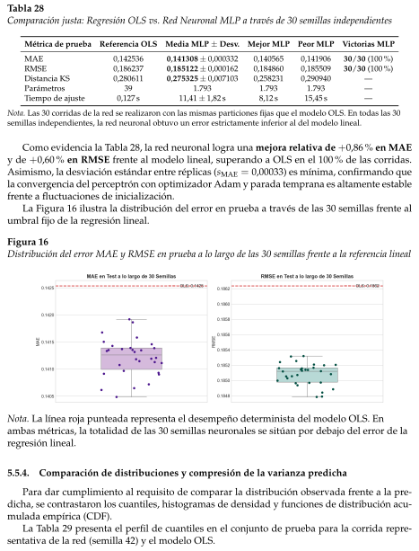
Comparación de distribuciones y compresión de la varianza predicha
Tabla 28Comparación justa: Regresión OLS vs. Red Neuronal MLP a través de 30 semillas independientesMétrica de pruebaReferencia OLSMedia MLP ± Desv.Mejor MLPPeor MLPVictorias MLPMAE0,1425360,141308 ± 0,0003320,1405650,14190630/30 (100 %)RMSE0,1862370,185122 ± 0,0001620,1848600,18550930/30 (100 %)Distancia KS0,2806110,275325 ± 0,0071030,2582310,290940—Parámetros391.7931.7931.793—Tiempo de ajuste0,127 s11,41 ± 1,82 s8,12 s15,45 s—Nota. Las 30 corridas de la red se realizaron con las mismas particiones fijas que el modelo OLS. En todas las 30semillas independientes, la red neuronal obtuvo un error estrictamente inferior al del modelo lineal.Como evidencia la Tabla 28, la red neuronal logra una mejora relativa de +0,86 % en MAEy de +0,60 % en RMSE frente al modelo lineal, superando a OLS en el 100 % de las corridas.Asimismo, la desviación estándar entre réplicas (sMAE = 0,00033) es mínima, confirmando quela convergencia del perceptrón con optimizador Adam y parada temprana es altamente establefrente a fluctuaciones de inicialización.La Figura 16 ilustra la distribución del error en prueba a través de las 30 semillas frente alumbral fijo de la regresión lineal.Figura 16Distribución del error MAE y RMSE en prueba a lo largo de las 30 semillas frente a la referencia linealNota. La línea roja punteada representa el desempeño determinista del modelo OLS. Enambas métricas, la totalidad de las 30 semillas neuronales se sitúan por debajo del error de laregresión lineal.5.5.4.Comparación de distribuciones y compresión de la varianza predichaPara dar cumplimiento al requisito de comparar la distribución observada frente a la pre-dicha, se contrastaron los cuantiles, histogramas de densidad y funciones de distribución acu-mulada empírica (CDF).La Tabla 29 presenta el perfil de cuantiles en el conjunto de prueba para la corrida repre-sentativa de la red (semilla 42) y el modelo OLS.
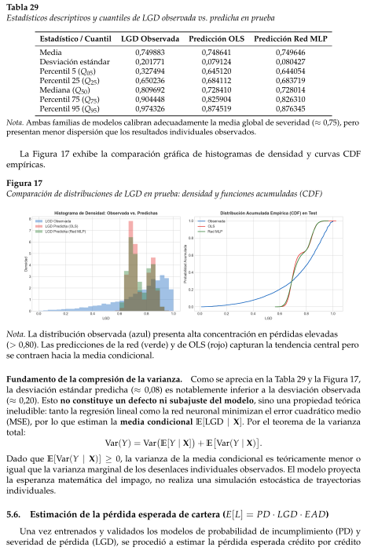
Estimación de la pérdida esperada de cartera (E[L] = PD * LGD * EAD)
Tabla 29Estadísticos descriptivos y cuantiles de LGD observada vs. predicha en pruebaEstadístico / CuantilLGD ObservadaPredicción OLSPredicción Red MLPMedia0,7498830,7486410,749646Desviación estándar0,2017710,0791240,080427Percentil 5 (Q05)0,3274940,6451200,644054Percentil 25 (Q25)0,6502360,6841120,683719Mediana (Q50)0,8096920,7284100,728014Percentil 75 (Q75)0,9044480,8259040,826310Percentil 95 (Q95)0,9743260,8745190,876345Nota. Ambas familias de modelos calibran adecuadamente la media global de severidad (≈0,75), peropresentan menor dispersión que los resultados individuales observados.La Figura 17 exhibe la comparación gráfica de histogramas de densidad y curvas CDFempíricas.Figura 17Comparación de distribuciones de LGD en prueba: densidad y funciones acumuladas (CDF)Nota. La distribución observada (azul) presenta alta concentración en pérdidas elevadas(> 0,80). Las predicciones de la red (verde) y de OLS (rojo) capturan la tendencia central perose contraen hacia la media condicional.Fundamento de la compresión de la varianza.Como se aprecia en la Tabla 29 y la Figura 17,la desviación estándar predicha (≈0,08) es notablemente inferior a la desviación observada(≈0,20). Esto no constituye un defecto ni subajuste del modelo, sino una propiedad teóricaineludible: tanto la regresión lineal como la red neuronal minimizan el error cuadrático medio(MSE), por lo que estiman la media condicional E[LGD | X]. Por el teorema de la varianzatotal:Var(Y) = Var�E[Y | X] + EVar(Y | X).Dado que E[Var(Y | X)] ≥0, la varianza de la media condicional es teóricamente menor oigual que la varianza marginal de los desenlaces individuales observados. El modelo proyectala esperanza matemática del impago, no realiza una simulación estocástica de trayectoriasindividuales.5.6.Estimación de la pérdida esperada de cartera (E[L] = PD · LGD · EAD)Una vez entrenados y validados los modelos de probabilidad de incumplimiento (PD) yseveridad de pérdida (LGD), se procedió a estimar la pérdida esperada crédito por crédito
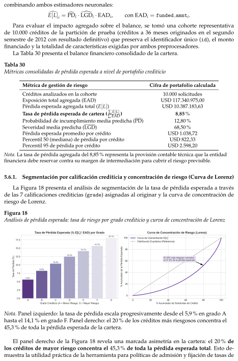
Segmentación por calificación crediticia y concentración de riesgo (Curva de Lorenz)
combinando ambos estimadores neuronales:dE[L]i = cPDi · [LGDi · EADi,con EADi = funded amnti.Para evaluar el impacto agregado sobre el balance, se tomó una cohorte representativade 10.000 créditos de la partición de prueba (créditos a 36 meses originados en el segundosemestre de 2012 con resultado definitivo) que preserva el identificador único (id), el montofinanciado y la totalidad de características exigidas por ambos preprocesadores.La Tabla 30 presenta el balance financiero consolidado de la cartera.Tabla 30Métricas consolidadas de pérdida esperada a nivel de portafolio crediticioMétrica de gestión de riesgoCifra de portafolio calculadaCréditos analizados en la cohorte10.000 solicitudesExposición total agregada (EAD)USD 117.340.975,00Pérdida esperada agregada total (E[L])USD 10.387.183,63Tasa de pérdida esperada de cartera ( ∑E[L]∑EAD)8,85 %Probabilidad de incumplimiento media predicha (PD)12,80 %Severidad media predicha (LGD)68,50 %Pérdida esperada promedio por créditoUSD 1.038,72Percentil 50 (mediana) de pérdida por créditoUSD 822,33Percentil 95 de pérdida por créditoUSD 2.598,20Nota. La tasa de pérdida agregada del 8,85 % representa la provisión contable técnica que la entidadfinanciera debe reservar contra su margen de intermediación para cubrir el riesgo previsible.5.6.1.Segmentación por calificación crediticia y concentración de riesgo (Curva de Lorenz)La Figura 18 presenta el análisis de segmentación de la tasa de pérdida esperada a travésde las 7 calificaciones crediticias (grade) asignadas al originar y la curva de concentración deriesgo de Lorenz.Figura 18Análisis de pérdida esperada: tasa de riesgo por grado crediticio y curva de concentración de LorenzNota. Panel izquierdo: la tasa de pérdida escala progresivamente desde el 5,9 % en grado Ahasta el 14,1 % en grado F. Panel derecho: el 20 % de los créditos más riesgosos concentra el45,3 % de toda la pérdida esperada de la cartera.El panel derecho de la Figura 18 revela una marcada asimetría en la cartera: el 20 % delos créditos de mayor riesgo concentra el 45,3 % de toda la pérdida esperada total. Esto de-muestra la utilidad práctica de la herramienta para políticas de admisión y fijación de tasas de
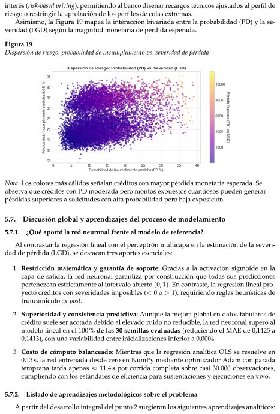
Discusión global y aprendizajes del proceso de modelamiento
¿Qué aportó la red neuronal frente al modelo de referencia?
Listado de aprendizajes metodológicos sobre el problema
interés (risk-based pricing), permitiendo al banco diseñar recargos técnicos ajustados al perfil deriesgo o restringir la aprobación de los perfiles de colas extremas.Asimismo, la Figura 19 mapea la interacción bivariada entre la probabilidad (PD) y la se-veridad (LGD) según la magnitud monetaria de pérdida esperada.Figura 19Dispersión de riesgo: probabilidad de incumplimiento vs. severidad de pérdidaNota. Los colores más cálidos señalan créditos con mayor pérdida monetaria esperada. Seobserva que créditos con PD moderada pero montos expuestos cuantiosos pueden generarpérdidas superiores a solicitudes con alta probabilidad pero baja exposición.5.7.Discusión global y aprendizajes del proceso de modelamiento5.7.1.¿Qué aportó la red neuronal frente al modelo de referencia?Al contrastar la regresión lineal con el perceptrón multicapa en la estimación de la severi-dad de pérdida (LGD), se destacan tres aportes esenciales:1. Restricción matemática y garantía de soporte: Gracias a la activación sigmoide en lacapa de salida, la red neuronal garantiza por construcción que todas sus prediccionespertenezcan estrictamente al intervalo abierto (0, 1). En contraste, la regresión lineal pro-yectó créditos con severidades imposibles (< 0 o > 1), requiriendo reglas heurísticas detruncamiento ex-post.2. Superioridad y consistencia predictiva: Aunque la mejora global en datos tabulares decrédito suele ser acotada debido al elevado ruido no reducible, la red neuronal superó almodelo lineal en el 100 % de las 30 semillas evaluadas (reduciendo el MAE de 0,1425 a0,1413), con una variabilidad entre inicializaciones inferior a 0,0004.3. Costo de cómputo balanceado: Mientras que la regresión analítica OLS se resuelve en0,13 s, la red entrenada desde cero en NumPy mediante optimizador Adam con paradatemprana tarda apenas ≈11,4 s por corrida completa sobre casi 30.000 observaciones,cumpliendo con los estándares de eficiencia para sustentaciones y ejecuciones en vivo.5.7.2.Listado de aprendizajes metodológicos sobre el problemaA partir del desarrollo integral del punto 2 surgieron los siguientes aprendizajes analíticos:
Uso de IA
Punto 1. Parte de Manuel
1. La convención contable del castigo invalida el uso de out prncp: En los créditos reco-nocidos como incobrables (Charged Off), el saldo pendiente contable aparece en cero enel 100 % de los casos por traslado a cuentas fuera de balance. Si se hubiese utilizado estecampo como exposición, la pérdida estimada habría colapsado erróneamente a cero.2. Naturaleza condicional de la LGD: La severidad solo existe para los clientes en default.No se debe mezclar créditos al día (Fully Paid) en la regresión de severidad, pues suprobabilidad de supervivencia ya es modelada por la clasificación de PD.3. La compresión de la varianza es un comportamiento matemático natural: La concentra-ción de las predicciones neuronales alrededor de la media (0,75) con desviación reducidarefleja la estimación de una media condicional E[LGD | X] bajo pérdida cuadrática, y nouna falla en el aprendizaje de la red.4. Extrapolación de severidad hacia moras tempranas: El modelo de LGD fue entrenadosobre créditos con desenlace definitivo (Charged Off y Default). Aplicar esta severidadsobre créditos en atraso temprano (Late 31-120 days) constituye una extrapolación quedebe declararse explícitamente como limitación metodológica del ejercicio.5. La exposición fija sobre el monto financiado (f unded amnt) representa un escenarioconservador: Al asumir que la exposición es el monto original desembolsado, se modelael peor escenario económico de default prematuro, sin considerar la amortización parcialacumulada antes del cese de pagos.6.Uso de IA1. Orientación inicial y prevención de errores metodológicos (Data Leakage)Prompt utilizado:≪[...] Claude, necesito que me orientes de la mejor forma tanto teórica como práctica parallegar al mejor desarrollo posible. Que me digas qué debo de tener en cuenta, dónde deboponer mas cuidado, qué librerías y todo me aconsejas para desarrollar el código. Apartecomo manejar el data leakage≫.Impacto en el resultado final: La respuesta a esta consulta fue fundamental en la fase deplanificación del proyecto. A nivel teórico, permitió establecer una hoja de ruta clara, defi-niendo las etapas críticas del ciclo de vida del modelado de datos. A nivel práctico, agilizó elentorno de desarrollo al recomendar las librerías más apropiadas de Python antes de iniciar laprogramación.El impacto más significativo de este prompt en el resultado final fue la identificación tempra-na y prevención del data leakage (fuga de datos). Al comprender cómo información del conjuntode prueba podía contaminar el conjunto de entrenamiento, se estructuró el código para sepa-rar rigurosamente los datos antes de aplicar cualquier transformación o escalado. Esto garan-tizó que las métricas de evaluación del modelo reportadas en este documento sean honestas,robustas y representen un rendimiento real frente a datos no vistos, evitando así resultadosartificialmente altos que habrían invalidado la investigación.6.1.Punto 1. Parte de ManuelLo que mejoró • Los datos correctos. Preguntar ≪¿por qué?≫sobre los créditos a 60 mesesevitó un sesgo: muchos aún no habían terminado y parecían buenos sin serlo. • Una evaluaciónhonesta. La partición temporal mostró que la tasa de malos sube de 12,3 • Una comparaciónjusta. Pedir comparar las logísticas llevó a ajustar también la referencia, usar 30 semillas y un
Tabla 31Atención a observaciones y requerimientos del proyectoDatos y partición≪Explícame el problema de lospréstamos a 36 y 60 meses. ¿No esmás claro no usar los de 60?≫y ≪¿Porqué usar como prueba el segundosemestre de 2012?≫Solo créditos a 36 meses(los de 60 no alcanzan aterminar) y particióntemporal por fecha deoriginación.Validación≪¿No es mejor k-fold? ¿Validar con elprimer semestre no genera sesgo?≫Se mantuvo un conjuntode validación temporal,justificado por la derivaen el tiempo.Red neuronal≪Arranquemos con la construccióndel código de la red neuronal.≫MLP propio en NumPy:propagación,retropropagación, Adam,dropout, L2 y paradatemprana.Reproducibilidad≪El código se pondrá a prueba: loshiperparámetros deben cambiarsefácil en un config.ini y ejecutarsefácil.≫config.ini + comandosde una línea; búsquedaaleatoria y 30 semillasreproducibles.Referencia≪Quiero comparar las regresioneslogísticas que hay para ver cuálquedó mejor y por qué.≫La logística de MaríaFernanda va al informe;la de NumPy,equivalente, sirve paralas semillas.Control de cambios≪Un compañero dice que la red nousa las mismas variables... me damiedo que su PR dañe algo.≫Se verificó que sí usan lasmismas variables y serechazó el PR, querompía la app.
Cacería de alucinaciones
Primer punto
bootstrap pareado. Con eso, la conclusión (la red no gana) es confiable. • Código reproducible.El prompt del config.ini hizo que cualquier resultado se regenere con un comando. • Una appque no extrapola. Preguntar por los rangos llevó a limitar el dti en la app al rango visto enentrenamientoLos prompts más útiles no fueron los que pedían código, sino los que pedían justificar yverificar: la IA rindió mejor como interlocutor crítico que como generador automático.7.Cacería de alucinaciones7.1.Primer puntoHallazgo 1: significado de los valores faltantes de mths since last delinq1. Prompt utilizado (literal).“De acuerdo al diccionario de los datos y el contexto de la base de datos, ¿qué significanlos NA?”2. Parte relevante de la respuesta de la IA.La IA afirmó que los valores faltantes indicaban que el cliente no había presentado mora,y propuso tratarlos con esa interpretación.3. Cómo se sospechó el error. La interpretación se presentó como un hecho, sin respaldoen el diccionario de datos ni en los datos. Si era cierta, los valores faltantes y los ceros dela variable debían alinearse de forma coherente con el número de moras en los últimosdos años (delinq 2yrs), y esto no se había comprobado.4. Evidencia. Se cruzaron los valores faltantes y los ceros de la variable que registra losmeses desde la última mora con el contador de moras recientes. El patrón dependía dela codificación de la base y no de la ausencia de mora: algunos ceros funcionaban comocódigos de dato ausente.5. Corrección. Los ceros de código se reconvirtieron a valores faltantes cuando delinq_2yrs= 0, y se creó el indicador nunca mora para distinguir a los clientes sin mora de losque tienen el dato ausente. La regla se fijó antes de ajustar el modelo y se aplicó igual alas tres particiones.Hallazgo 2: cifra mal transcrita de la proporción de nunca mora en 20071. Prompt utilizado (literal).“Escribe en formato latex el siguiente resultado”2. Parte relevante de la respuesta de la IA.La IA reportó que la proporción de créditos de 2007 sin historial de mora era de 66.6 %.3. Cómo se sospechó el error. Al comparar la cifra escrita por la IA con la salida del propiocódigo, los valores no coincidían.4. Evidencia. La salida del código mostró que la proporción de clientes sin historial de moraen 2007 era 0,617 (61,7 %). La cifra de la respuesta estaba mal transcrita.5. Corrección. Se descartó el valor de 66.6 %y se reemplazó por el de la salida del código.El argumento que dependía de esa cifra se replanteó con el valor correcto.
Hallazgo 3: una partición con créditos que aún no habían terminado
Segundo punto
Prompt utilizado
Respuesta relevante de la IA
Cómo se sospechó que había un error
7.1.1.Hallazgo 3: una partición con créditos que aún no habían terminadoPrompt (literal): ≪Qué me recomiendas hacer para la partición de los datos? explicame demanera intuitiva por qué usar como test solo el segundo semestre de 2012 y no usar los otrosaños que hay [. . . ]≫Respuesta de la IA (parte relevante):≪Te recomiendo train: 2007–2011, validación: primer semestre de 2012, prueba: segundo se-mestre de 2012 [. . . ] — train (2007 – 2011) — 40.534 — 15.8 %— 22 %— Con esto el conjunto deentrenamiento casi se duplica (de 20.776 a 40.534 créditos)≫Cómo sospechamos: la IA misma había mostrado minutos antes que la tasa de malos a 60meses saltaba de 22,5 %(2010) a 31,3 %(2011). Preguntamos: ≪explícame bien el problema delos préstamos a 36 y 60 meses≫.Evidencia (derivación + experimento): • Derivación con fechas: un crédito a 60 meses deenero de 2011 vence en enero de 2016. Los datos se cortan en diciembre de 2015. Los queseguían pagando al día quedan como Current y se excluyen; solo se ven los que fallaron oprepagaron.Corrección: primero se limitó el entrenamiento a 60 meses hasta 2010; al final se dejaronsolo los créditos a 36 meses, que terminan todos antes del corte. Con eso, la tasa de malosqueda en 12,3 %(entrenamiento), 13,8 %(validación) y 13,6 %(prueba).Lección: antes de aceptar una partición, verificar para cada crédito que fecha de originación+ plazo ≤fecha de corte de los datos. Un ≪más datos≫que la IA ofrece como mejora puede sermás datos sesgados.7.1.2.7.2.Segundo punto7.2.1.Prompt utilizado≪Integra en un notebook reproducible los requisitos del punto 2, incluyendo la pre-paración de datos, el entrenamiento y evaluación de LGD y su combinación con PDpara calcular la pérdida esperada. Comprueba que las etapas generen los archivosnecesarios para ejecutar el flujo completo≫.7.2.2.Respuesta relevante de la IALa IA respondió: ≪Releí el punto 2 y ya subí el notebook a tu GitHub≫. Entre los compo-nentes enumerados incluyó: ≪Pérdida esperada y justificación de EAD≫.La respuesta también advertía que faltaban el modelo de PD y los datos de los créditos. Portanto, no se afirma que la IA hubiera asegurado haber calculado pérdidas reales. El problemafue entregar una sección parcialmente integrada: comprobar que faltaban archivos no resolvíacómo producirlos dentro del procedimiento solicitado.7.2.3.Cómo se sospechó que había un errorAl revisar las celdas se observó que la sección de pérdida esperada solicitaba el archivodatos/creditos_para_predecir.parquet, pero ninguna etapa anterior del notebook lo gene-raba.Además, la salida preparada para entrenar LGD no conservaba id ni funded amnt, necesa-rios para la integración propuesta. Incluso con una PD entrenada, todavía se requería prepararuna entrada adicional.
Evidencia del problema
Corrección
Punto 2
7.2.4.Evidencia del problemaEn la versión inicial, preparar lgd.py seleccionaba las columnas de la siguiente manera:salida = datos[entradas+ ["home_ownership", "purpose", "lgd", "particion"]].copy()Esta selección no incluía id ni funded amnt. En cambio, estimar perdida.py requería unidentificador único por crédito y el monto financiado como exposición proxy. La salida de pre-paración no satisfacía esos requisitos y tampoco se generaba la cohorte alternativa solicitada.La ecuación utilizada era correcta:cELproxyi= dPDi · [LGDproxyi· funded amnti.En esta expresión, PD y LGD corresponden a las estimaciones de los modelos.Todos los factores deben corresponder al mismo crédito. El identificador conserva la traza-bilidad; no debe convertirse por ello en predictor. La exposición debe estar disponible para elcálculo monetario, aunque no forme parte de las entradas de LGD.La exclusión de estos campos del archivo de entrenamiento no era, por sí sola, un error.La deficiencia consistió en no construir por separado el archivo común necesario. La eviden-cia es la incompatibilidad entre las salidas producidas y las entradas requeridas, no un fallomatemático de la ecuación.7.2.5.CorrecciónSe implementó una etapa para construir una cohorte común que conserve el identificador,la exposición proxy y las características requeridas por ambos modelos. PD y LGD se aplicansobre los mismos registros utilizando sus respectivos preprocesadores.La modificación incorporó controles de identificación, columnas requeridas y valores váli-dos antes de calcular la pérdida por crédito. Su funcionamiento con datos reales debe compro-barse mediante la ejecución completa y el registro de los artefactos de entrada y salida.La integración funcional no demuestra, por sí sola, la validez estadística del producto. To-davía deben verificarse la compatibilidad de poblaciones y horizontes, la coherencia de EADcon la LGD proxy y la ausencia de solapamiento con entrenamiento cuando se pretenda unaevaluación independiente.7.3.Punto 2ReferenciasAlbert, Adelin y J. A. Anderson (1984). ((On the Existence of Maximum Likelihood Estimatesin Logistic Regression Models)). En: Biometrika 71.1, págs. 1-10.Belsley, David A., Edwin Kuh y Roy E. Welsch (1980). Regression Diagnostics: Identifying Influen-tial Data and Sources of Collinearity. Wiley.Bergstra, James y Yoshua Bengio (2012). ((Random search for hyper-parameter optimization)).En: Journal of Machine Learning Research 13, págs. 281-305.Bishop, Christopher M. (2006). Pattern Recognition and Machine Learning. Springer.Brier, Glenn W. (1950). ((Verification of forecasts expressed in terms of probability)). En: MonthlyWeather Review 78.1, págs. 1-3.Cox, David R. (1958). ((Two Further Applications of a Model for Binary Regression)). En: Bio-metrika 45.3/4, págs. 562-565.
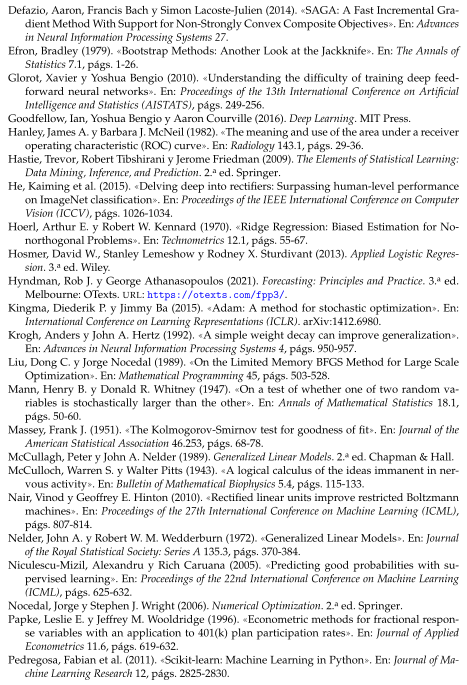
Defazio, Aaron, Francis Bach y Simon Lacoste-Julien (2014). ((SAGA: A Fast Incremental Gra-dient Method With Support for Non-Strongly Convex Composite Objectives)). En: Advancesin Neural Information Processing Systems 27.Efron, Bradley (1979). ((Bootstrap Methods: Another Look at the Jackknife)). En: The Annals ofStatistics 7.1, págs. 1-26.Glorot, Xavier y Yoshua Bengio (2010). ((Understanding the difficulty of training deep feed-forward neural networks)). En: Proceedings of the 13th International Conference on ArtificialIntelligence and Statistics (AISTATS), págs. 249-256.Goodfellow, Ian, Yoshua Bengio y Aaron Courville (2016). Deep Learning. MIT Press.Hanley, James A. y Barbara J. McNeil (1982). ((The meaning and use of the area under a receiveroperating characteristic (ROC) curve)). En: Radiology 143.1, págs. 29-36.Hastie, Trevor, Robert Tibshirani y Jerome Friedman (2009). The Elements of Statistical Learning:Data Mining, Inference, and Prediction. 2.a ed. Springer.He, Kaiming et al. (2015). ((Delving deep into rectifiers: Surpassing human-level performanceon ImageNet classification)). En: Proceedings of the IEEE International Conference on ComputerVision (ICCV), págs. 1026-1034.Hoerl, Arthur E. y Robert W. Kennard (1970). ((Ridge Regression: Biased Estimation for No-northogonal Problems)). En: Technometrics 12.1, págs. 55-67.Hosmer, David W., Stanley Lemeshow y Rodney X. Sturdivant (2013). Applied Logistic Regres-sion. 3.a ed. Wiley.Hyndman, Rob J. y George Athanasopoulos (2021). Forecasting: Principles and Practice. 3.a ed.Melbourne: OTexts. URL: https://otexts.com/fpp3/.Kingma, Diederik P. y Jimmy Ba (2015). ((Adam: A method for stochastic optimization)). En:International Conference on Learning Representations (ICLR). arXiv:1412.6980.Krogh, Anders y John A. Hertz (1992). ((A simple weight decay can improve generalization)).En: Advances in Neural Information Processing Systems 4, págs. 950-957.Liu, Dong C. y Jorge Nocedal (1989). ((On the Limited Memory BFGS Method for Large ScaleOptimization)). En: Mathematical Programming 45, págs. 503-528.Mann, Henry B. y Donald R. Whitney (1947). ((On a test of whether one of two random va-riables is stochastically larger than the other)). En: Annals of Mathematical Statistics 18.1,págs. 50-60.Massey, Frank J. (1951). ((The Kolmogorov-Smirnov test for goodness of fit)). En: Journal of theAmerican Statistical Association 46.253, págs. 68-78.McCullagh, Peter y John A. Nelder (1989). Generalized Linear Models. 2.a ed. Chapman & Hall.McCulloch, Warren S. y Walter Pitts (1943). ((A logical calculus of the ideas immanent in ner-vous activity)). En: Bulletin of Mathematical Biophysics 5.4, págs. 115-133.Nair, Vinod y Geoffrey E. Hinton (2010). ((Rectified linear units improve restricted Boltzmannmachines)). En: Proceedings of the 27th International Conference on Machine Learning (ICML),págs. 807-814.Nelder, John A. y Robert W. M. Wedderburn (1972). ((Generalized Linear Models)). En: Journalof the Royal Statistical Society: Series A 135.3, págs. 370-384.Niculescu-Mizil, Alexandru y Rich Caruana (2005). ((Predicting good probabilities with su-pervised learning)). En: Proceedings of the 22nd International Conference on Machine Learning(ICML), págs. 625-632.Nocedal, Jorge y Stephen J. Wright (2006). Numerical Optimization. 2.a ed. Springer.Papke, Leslie E. y Jeffrey M. Wooldridge (1996). ((Econometric methods for fractional respon-se variables with an application to 401(k) plan participation rates)). En: Journal of AppliedEconometrics 11.6, págs. 619-632.Pedregosa, Fabian et al. (2011). ((Scikit-learn: Machine Learning in Python)). En: Journal of Ma-chine Learning Research 12, págs. 2825-2830.
Prechelt, Lutz (1998). ((Early stopping — but when?)) En: Neural Networks: Tricks of the Trade.Vol. 1524. Lecture Notes in Computer Science. Springer, págs. 55-69.Rosenblatt, Frank (1958). ((The perceptron: A probabilistic model for information storage andorganization in the brain)). En: Psychological Review 65.6, págs. 386-408.Rumelhart, David E., Geoffrey E. Hinton y Ronald J. Williams (1986). ((Learning representa-tions by back-propagating errors)). En: Nature 323.6088, págs. 533-536.Seabold, Skipper y Josef Perktold (2010). ((Statsmodels: Econometric and Statistical Modelingwith Python)). En: Proceedings of the 9th Python in Science Conference.Siddiqi, Naeem (2006). Credit Risk Scorecards: Developing and Implementing Intelligent Credit Sco-ring. Wiley.Srivastava, Nitish et al. (2014). ((Dropout: A simple way to prevent neural networks from over-fitting)). En: Journal of Machine Learning Research 15, págs. 1929-1958.Thomas, Lyn C., David B. Edelman y Jonathan N. Crook (2002). Credit Scoring and Its Applica-tions. SIAM.Tibshirani, Robert (1996). ((Regression Shrinkage and Selection via the Lasso)). En: Journal of theRoyal Statistical Society: Series B 58.1, págs. 267-288.Wilson, Edwin B. (1927). ((Probable Inference, the Law of Succession, and Statistical Inference)).En: Journal of the American Statistical Association 22.158, págs. 209-212.